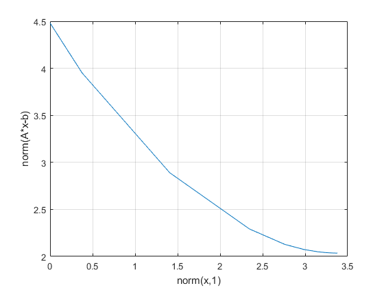

has_quadprog = exist( 'quadprog' ); has_quadprog = has_quadprog == 2 | has_quadprog == 3; has_linprog = exist( 'linprog' ); has_linprog = has_linprog == 2 | has_linprog == 3; rnstate = randn( 'state' ); randn( 'state', 1 ); s_quiet = cvx_quiet(true); s_pause = cvx_pause(false); cvx_clear; echo on %%%%%%%%%%%%%%%%%%%%%%%%%%%%%% % SECTION 2.1: LEAST SQUARES % %%%%%%%%%%%%%%%%%%%%%%%%%%%%%% % Input data m = 16; n = 8; A = randn(m,n); b = randn(m,1); % Matlab version x_ls = A \ b; % cvx version cvx_begin variable x(n) minimize( norm(A*x-b) ) cvx_end echo off % Compare disp( sprintf( '\nResults:\n--------\nnorm(A*x_ls-b): %6.4f\nnorm(A*x-b): %6.4f\ncvx_optval: %6.4f\ncvx_status: %s\n', norm(A*x_ls-b), norm(A*x-b), cvx_optval, cvx_status ) ); disp( 'Verify that x_ls == x:' ); disp( [ ' x_ls = [ ', sprintf( '%7.4f ', x_ls ), ']' ] ); disp( [ ' x = [ ', sprintf( '%7.4f ', x ), ']' ] ); disp( 'Residual vector:' ); disp( [ ' A*x-b = [ ', sprintf( '%7.4f ', A*x-b ), ']' ] ); disp( ' ' ); try input( 'Press Enter/Return for the next example...' ); clc; catch, end echo on %%%%%%%%%%%%%%%%%%%%%%%%%%%%%%%%%%%%%%%%%%%%%%%% % SECTION 2.2: BOUND-CONSTRAINED LEAST SQUARES % %%%%%%%%%%%%%%%%%%%%%%%%%%%%%%%%%%%%%%%%%%%%%%%% % More input data bnds = randn(n,2); l = min( bnds, [] ,2 ); u = max( bnds, [], 2 ); if has_quadprog, % Quadprog version x_qp = quadprog( 2*A'*A, -2*A'*b, [], [], [], [], l, u ); else % quadprog not present on this system. end % cvx version cvx_begin variable x(n) minimize( norm(A*x-b) ) subject to l <= x <= u cvx_end echo off % Compare if has_quadprog, disp( sprintf( '\nResults:\n--------\nnorm(A*x_qp-b): %6.4f\nnorm(A*x-b): %6.4f\ncvx_optval: %6.4f\ncvx_status: %s\n', norm(A*x_qp-b), norm(A*x-b), cvx_optval, cvx_status ) ); disp( 'Verify that l <= x_qp == x <= u:' ); disp( [ ' l = [ ', sprintf( '%7.4f ', l ), ']' ] ); disp( [ ' x_qp = [ ', sprintf( '%7.4f ', x_qp ), ']' ] ); disp( [ ' x = [ ', sprintf( '%7.4f ', x ), ']' ] ); disp( [ ' u = [ ', sprintf( '%7.4f ', u ), ']' ] ); else disp( sprintf( '\nResults:\n--------\nnorm(A*x-b): %6.4f\ncvx_optval: %6.4f\ncvx_status: %s\n', norm(A*x-b), cvx_optval, cvx_status ) ); disp( 'Verify that l <= x <= u:' ); disp( [ ' l = [ ', sprintf( '%7.4f ', l ), ']' ] ); disp( [ ' x = [ ', sprintf( '%7.4f ', x ), ']' ] ); disp( [ ' u = [ ', sprintf( '%7.4f ', u ), ']' ] ); end disp( 'Residual vector:' ); disp( [ ' A*x-b = [ ', sprintf( '%7.4f ', A*x-b ), ']' ] ); disp( ' ' ); try input( 'Press Enter/Return for the next example...' ); clc; catch, end echo on %%%%%%%%%%%%%%%%%%%%%%%%%%%%%%%%%%%%%%%%%%%%%%%%%%%%%%%%% % SECTION 2.3: OTHER NORMS AND FUNCTIONS: INFINITY NORM % %%%%%%%%%%%%%%%%%%%%%%%%%%%%%%%%%%%%%%%%%%%%%%%%%%%%%%%%% if has_linprog, % linprog version f = [ zeros(n,1); 1 ]; Ane = [ +A, -ones(m,1) ; ... -A, -ones(m,1) ]; bne = [ +b; -b ]; xt = linprog(f,Ane,bne); x_lp = xt(1:n,:); else % linprog not present on this system. end % cvx version cvx_begin variable x(n) minimize( norm(A*x-b,Inf) ) cvx_end echo off % Compare if has_linprog, disp( sprintf( '\nResults:\n--------\nnorm(A*x_lp-b,Inf): %6.4f\nnorm(A*x-b,Inf): %6.4f\ncvx_optval: %6.4f\ncvx_status: %s\n', norm(A*x_lp-b,Inf), norm(A*x-b,Inf), cvx_optval, cvx_status ) ); disp( 'Verify that x_lp == x:' ); disp( [ ' x_lp = [ ', sprintf( '%7.4f ', x_lp ), ']' ] ); disp( [ ' x = [ ', sprintf( '%7.4f ', x ), ']' ] ); else disp( sprintf( '\nResults:\n--------\nnorm(A*x-b,Inf): %6.4f\ncvx_optval: %6.4f\ncvx_status: %s\n', norm(A*x-b,Inf), cvx_optval, cvx_status ) ); disp( 'Optimal vector:' ); disp( [ ' x = [ ', sprintf( '%7.4f ', x ), ']' ] ); end disp( sprintf( 'Residual vector; verify that the peaks match the objective (%6.4f):', cvx_optval ) ); disp( [ ' A*x-b = [ ', sprintf( '%7.4f ', A*x-b ), ']' ] ); disp( ' ' ); try input( 'Press Enter/Return for the next example...' ); clc; catch, end echo on %%%%%%%%%%%%%%%%%%%%%%%%%%%%%%%%%%%%%%%%%%%%%%%%%%%% % SECTION 2.3: OTHER NORMS AND FUNCTIONS: ONE NORM % %%%%%%%%%%%%%%%%%%%%%%%%%%%%%%%%%%%%%%%%%%%%%%%%%%%% if has_linprog, % Matlab version f = [ zeros(n,1); ones(m,1); ones(m,1) ]; Aeq = [ A, -eye(m), +eye(m) ]; lb = [ -Inf*ones(n,1); zeros(m,1); zeros(m,1) ]; xzz = linprog(f,[],[], Aeq,b,lb,[]); x_lp = xzz(1:n,:) - xzz(n+1:2*n,:); else % linprog not present on this system end % cvx version cvx_begin variable x(n) minimize( norm(A*x-b,1) ) cvx_end echo off % Compare if has_linprog, disp( sprintf( '\nResults:\n--------\nnorm(A*x_lp-b,1): %6.4f\nnorm(A*x-b,1): %6.4f\ncvx_optval: %6.4f\ncvx_status: %s\n', norm(A*x_lp-b,1), norm(A*x-b,1), cvx_optval, cvx_status ) ); disp( 'Verify that x_lp == x:' ); disp( [ ' x_lp = [ ', sprintf( '%7.4f ', x_lp ), ']' ] ); disp( [ ' x = [ ', sprintf( '%7.4f ', x ), ']' ] ); else disp( sprintf( '\nResults:\n--------\nnorm(A*x-b,1): %6.4f\ncvx_optval: %6.4f\ncvx_status: %s\n', norm(A*x-b,1), cvx_optval, cvx_status ) ); disp( 'Optimal vector:' ); disp( [ ' x = [ ', sprintf( '%7.4f ', x ), ']' ] ); end disp( 'Residual vector; verify the presence of several zero residuals:' ); disp( [ ' A*x-b = [ ', sprintf( '%7.4f ', A*x-b ), ']' ] ); disp( ' ' ); try input( 'Press Enter/Return for the next example...' ); clc; catch, end echo on %%%%%%%%%%%%%%%%%%%%%%%%%%%%%%%%%%%%%%%%%%%%%%%%%%%%%%%%%% % SECTION 2.3: OTHER NORMS AND FUNCTIONS: LARGEST-K NORM % %%%%%%%%%%%%%%%%%%%%%%%%%%%%%%%%%%%%%%%%%%%%%%%%%%%%%%%%%% % cvx specification k = 5; cvx_begin variable x(n) minimize( norm_largest(A*x-b,k) ) cvx_end echo off % Compare temp = sort(abs(A*x-b)); disp( sprintf( '\nResults:\n--------\nnorm_largest(A*x-b,k): %6.4f\ncvx_optval: %6.4f\ncvx_status: %s\n', norm_largest(A*x-b,k), cvx_optval, cvx_status ) ); disp( 'Optimal vector:' ); disp( [ ' x = [ ', sprintf( '%7.4f ', x ), ']' ] ); disp( sprintf( 'Residual vector; verify a tie for %d-th place (%7.4f):', k, temp(end-k+1) ) ); disp( [ ' A*x-b = [ ', sprintf( '%7.4f ', A*x-b ), ']' ] ); disp( ' ' ); try input( 'Press Enter/Return for the next example...' ); clc; catch, end echo on %%%%%%%%%%%%%%%%%%%%%%%%%%%%%%%%%%%%%%%%%%%%%%%%%%%%%%%%% % SECTION 2.3: OTHER NORMS AND FUNCTIONS: HUBER PENALTY % %%%%%%%%%%%%%%%%%%%%%%%%%%%%%%%%%%%%%%%%%%%%%%%%%%%%%%%%% % cvx specification cvx_begin variable x(n) minimize( sum(huber(A*x-b)) ) cvx_end echo off % Compare disp( sprintf( '\nResults:\n--------\nsum(huber(A*x-b)): %6.4f\ncvx_optval: %6.4f\ncvx_status: %s\n', sum(huber(A*x-b)), cvx_optval, cvx_status ) ); disp( 'Optimal vector:' ); disp( [ ' x = [ ', sprintf( '%7.4f ', x ), ']' ] ); disp( 'Residual vector:' ); disp( [ ' A*x-b = [ ', sprintf( '%7.4f ', A*x-b ), ']' ] ); disp( ' ' ); try input( 'Press Enter/Return for the next example...' ); clc; catch, end echo on %%%%%%%%%%%%%%%%%%%%%%%%%%%%%%%%%% % SECTION 2.4: OTHER CONSTRAINTS % %%%%%%%%%%%%%%%%%%%%%%%%%%%%%%%%%% % More input data p = 4; C = randn(p,n); d = randn(p,1); % cvx specification cvx_begin variable x(n); minimize( norm(A*x-b) ) subject to C*x == d norm(x,Inf) <= 1 cvx_end echo off % Compare disp( sprintf( '\nResults:\n--------\nnorm(A*x-b): %6.4f\ncvx_optval: %6.4f\ncvx_status: %s\n', norm(A*x-b), cvx_optval, cvx_status ) ); disp( 'Optimal vector:' ); disp( [ ' x = [ ', sprintf( '%7.4f ', x ), ']' ] ); disp( 'Residual vector:' ); disp( [ ' A*x-b = [ ', sprintf( '%7.4f ', A*x-b ), ']' ] ); disp( 'Equality constraints:' ); disp( [ ' C*x = [ ', sprintf( '%7.4f ', C*x ), ']' ] ); disp( [ ' d = [ ', sprintf( '%7.4f ', d ), ']' ] ); try input( 'Press Enter/Return for the next example...' ); clc; catch, end echo on %%%%%%%%%%%%%%%%%%%%%%%%%%%%%%%%%%%%%%%%%% % SECTION 2.5: AN OPTIMAL TRADEOFF CURVE % %%%%%%%%%%%%%%%%%%%%%%%%%%%%%%%%%%%%%%%%%% % The basic problem: % cvx_begin % variable x(n) % minimize( norm(A*x-b)+gamma(k)*norm(x,1) ) % cvx_end echo off disp( ' ' ); disp( 'Generating tradeoff curve...' ); cvx_pause(false); gamma = logspace( -2, 2, 20 ); l2norm = zeros(size(gamma)); l1norm = zeros(size(gamma)); fprintf( 1, ' gamma norm(x,1) norm(A*x-b)\n' ); fprintf( 1, '---------------------------------------\n' ); for k = 1:length(gamma), fprintf( 1, '%8.4e', gamma(k) ); cvx_begin variable x(n) minimize( norm(A*x-b)+gamma(k)*norm(x,1) ) cvx_end l1norm(k) = norm(x,1); l2norm(k) = norm(A*x-b); fprintf( 1, ' %8.4e %8.4e\n', l1norm(k), l2norm(k) ); end plot( l1norm, l2norm ); xlabel( 'norm(x,1)' ); ylabel( 'norm(A*x-b)' ); grid disp( 'Done. (Check out the graph!)' ); randn( 'state', rnstate ); cvx_quiet(s_quiet); cvx_pause(s_pause);
Warning: The global CVX quiet setting cannot be changed while a model is being
constructed.
%%%%%%%%%%%%%%%%%%%%%%%%%%%%%%
% SECTION 2.1: LEAST SQUARES %
%%%%%%%%%%%%%%%%%%%%%%%%%%%%%%
% Input data
m = 16; n = 8;
A = randn(m,n);
b = randn(m,1);
% Matlab version
x_ls = A \ b;
% cvx version
cvx_begin
variable x(n)
minimize( norm(A*x-b) )
cvx_end
Calling SDPT3 4.0: 650 variables, 16 equality constraints
------------------------------------------------------------
num. of constraints = 16
dim. of socp var = 17, num. of socp blk = 1
dim. of free var = 633 *** convert ublk to lblk
*******************************************************************
SDPT3: Infeasible path-following algorithms
*******************************************************************
version predcorr gam expon scale_data
NT 1 0.000 1 0
it pstep dstep pinfeas dinfeas gap prim-obj dual-obj cputime
-------------------------------------------------------------------
0|0.000|0.000|8.2e-01|6.3e+02|1.6e+06| 6.759567e+00 0.000000e+00| 0:0:00| chol 1 1
1|1.000|0.984|5.9e-07|1.1e+01|5.4e+03| 4.754745e+00 1.287843e+00| 0:0:00| chol 1 1
2|0.924|0.985|1.1e-06|1.9e-01|2.0e+01| 2.083523e+00 1.860294e+00| 0:0:00| chol 1 1
3|0.987|0.984|1.1e-06|6.0e-03|1.2e-01| 2.036160e+00 2.033211e+00| 0:0:00| chol 1 1
4|0.994|0.984|2.8e-08|8.4e-04|3.2e-03| 2.035410e+00 2.035439e+00| 0:0:00| chol 1 1
5|1.000|0.916|8.0e-11|2.2e-05|2.2e-05| 2.035395e+00 2.035406e+00| 0:0:00| chol 1 1
6|0.985|0.878|3.2e-11|5.3e-07|1.8e-07| 2.035393e+00 2.035394e+00| 0:0:00| chol 1 1
7|0.986|0.956|2.4e-12|2.2e-08|2.8e-09| 2.035393e+00 2.035393e+00| 0:0:00| chol 1 1
8|0.987|0.966|1.2e-09|7.7e-10|4.8e-11| 2.035393e+00 2.035393e+00| 0:0:00|
stop: max(relative gap, infeasibilities) < 1.49e-08
-------------------------------------------------------------------
number of iterations = 8
primal objective value = 2.03539264e+00
dual objective value = 2.03539264e+00
gap := trace(XZ) = 4.82e-11
relative gap = 9.50e-12
actual relative gap = -3.00e-10
rel. primal infeas (scaled problem) = 1.20e-09
rel. dual " " " = 7.71e-10
rel. primal infeas (unscaled problem) = 0.00e+00
rel. dual " " " = 0.00e+00
norm(X), norm(y), norm(Z) = 3.3e+00, 1.0e+00, 1.4e+00
norm(A), norm(b), norm(C) = 1.7e+01, 5.5e+00, 2.0e+00
Total CPU time (secs) = 0.13
CPU time per iteration = 0.02
termination code = 0
DIMACS: 2.0e-09 0.0e+00 7.7e-10 0.0e+00 -3.0e-10 9.5e-12
-------------------------------------------------------------------
------------------------------------------------------------
Status: Solved
Optimal value (cvx_optval): +2.03539
echo off
Results:
--------
norm(A*x_ls-b): 2.0354
norm(A*x-b): 2.0354
cvx_optval: 2.0354
cvx_status: Solved
Verify that x_ls == x:
x_ls = [ -0.2628 0.8828 -0.0734 -1.0844 0.3249 -0.3330 0.0603 0.3802 ]
x = [ -0.2628 0.8828 -0.0734 -1.0844 0.3249 -0.3330 0.0603 0.3802 ]
Residual vector:
A*x-b = [ -0.3262 -0.0070 -0.9543 0.2447 -0.6418 -0.3426 -0.1870 0.2960 0.6024 -0.0440 0.6238 -0.7399 0.0849 0.9323 0.4799 -0.0762 ]
%%%%%%%%%%%%%%%%%%%%%%%%%%%%%%%%%%%%%%%%%%%%%%%%
% SECTION 2.2: BOUND-CONSTRAINED LEAST SQUARES %
%%%%%%%%%%%%%%%%%%%%%%%%%%%%%%%%%%%%%%%%%%%%%%%%
% More input data
bnds = randn(n,2);
l = min( bnds, [] ,2 );
u = max( bnds, [], 2 );
if has_quadprog,
% Quadprog version
x_qp = quadprog( 2*A'*A, -2*A'*b, [], [], [], [], l, u );
Minimum found that satisfies the constraints.
Optimization completed because the objective function is non-decreasing in
feasible directions, to within the default value of the optimality tolerance,
and constraints are satisfied to within the default value of the constraint tolerance.
% quadprog not present on this system.
end
% cvx version
cvx_begin
variable x(n)
minimize( norm(A*x-b) )
subject to
l <= x <= u
cvx_end
Calling SDPT3 4.0: 658 variables, 24 equality constraints
------------------------------------------------------------
num. of constraints = 24
dim. of socp var = 17, num. of socp blk = 1
dim. of linear var = 16
dim. of free var = 625 *** convert ublk to lblk
*******************************************************************
SDPT3: Infeasible path-following algorithms
*******************************************************************
version predcorr gam expon scale_data
NT 1 0.000 1 0
it pstep dstep pinfeas dinfeas gap prim-obj dual-obj cputime
-------------------------------------------------------------------
0|0.000|0.000|1.3e+01|6.3e+02|6.8e+06| 1.396367e+01 0.000000e+00| 0:0:00| chol 1 1
1|0.980|0.982|2.7e-01|1.2e+01|2.6e+04| 8.794015e+00 -5.303879e+01| 0:0:00| chol 1 1
2|0.970|0.945|8.2e-03|8.0e-01|3.5e+02| 5.241111e+00 -3.563680e+00| 0:0:00| chol 1 1
3|1.000|0.516|1.8e-07|3.9e-01|5.2e+01| 4.972273e+00 -1.887415e-01| 0:0:00| chol 1 1
4|0.681|0.936|9.3e-08|2.7e-02|1.5e+00| 4.410516e+00 3.685564e+00| 0:0:00| chol 1 1
5|0.851|0.637|1.4e-08|9.8e-03|3.2e-01| 4.212828e+00 3.993931e+00| 0:0:00| chol 1 1
6|0.705|0.640|4.5e-09|3.5e-03|9.2e-02| 4.161973e+00 4.086350e+00| 0:0:00| chol 1 1
7|0.645|0.850|1.7e-09|6.4e-04|2.0e-02| 4.143132e+00 4.125174e+00| 0:0:00| chol 1 1
8|0.633|0.921|7.1e-10|1.4e-04|5.0e-03| 4.136521e+00 4.131957e+00| 0:0:00| chol 1 1
9|0.846|0.732|1.9e-10|3.4e-05|1.0e-03| 4.133952e+00 4.133052e+00| 0:0:00| chol 1 1
10|0.745|0.714|8.9e-11|7.0e-06|2.7e-04| 4.133559e+00 4.133313e+00| 0:0:00| chol 1 1
11|0.708|0.671|9.0e-11|1.8e-06|8.4e-05| 4.133457e+00 4.133380e+00| 0:0:00| chol 1 1
12|0.734|0.654|5.3e-11|5.8e-07|2.6e-05| 4.133424e+00 4.133400e+00| 0:0:00| chol 1 1
13|0.799|0.665|3.1e-11|1.8e-07|7.1e-06| 4.133413e+00 4.133407e+00| 0:0:00| chol 1 1
14|0.906|0.805|2.6e-11|4.9e-08|1.1e-06| 4.133410e+00 4.133409e+00| 0:0:00| chol 1 1
15|0.976|0.973|1.2e-11|7.8e-09|3.7e-08| 4.133410e+00 4.133410e+00| 0:0:00|
stop: max(relative gap, infeasibilities) < 1.49e-08
-------------------------------------------------------------------
number of iterations = 15
primal objective value = 4.13340970e+00
dual objective value = 4.13340968e+00
gap := trace(XZ) = 3.69e-08
relative gap = 3.99e-09
actual relative gap = 2.77e-09
rel. primal infeas (scaled problem) = 1.17e-11
rel. dual " " " = 7.76e-09
rel. primal infeas (unscaled problem) = 0.00e+00
rel. dual " " " = 0.00e+00
norm(X), norm(y), norm(Z) = 6.6e+00, 1.2e+00, 2.9e+00
norm(A), norm(b), norm(C) = 1.3e+01, 7.7e+00, 2.0e+00
Total CPU time (secs) = 0.17
CPU time per iteration = 0.01
termination code = 0
DIMACS: 2.1e-11 0.0e+00 7.8e-09 0.0e+00 2.8e-09 4.0e-09
-------------------------------------------------------------------
------------------------------------------------------------
Status: Solved
Optimal value (cvx_optval): +4.13341
echo off
Results:
--------
norm(A*x_qp-b): 4.1334
norm(A*x-b): 4.1334
cvx_optval: 4.1334
cvx_status: Solved
Verify that l <= x_qp == x <= u:
l = [ -0.5618 0.2760 -0.2277 -0.0290 -0.9287 0.4520 0.1014 -0.3658 ]
x_qp = [ -0.0910 0.2918 0.2746 -0.0290 0.0828 0.4520 0.1014 0.6919 ]
x = [ -0.0910 0.2918 0.2746 -0.0290 0.0828 0.4520 0.1014 0.6919 ]
u = [ -0.0910 0.7395 0.9403 0.1842 0.0828 0.7450 2.4881 0.6919 ]
Residual vector:
A*x-b = [ -0.1209 0.2155 -1.0903 -0.1313 -2.0952 1.6798 0.3784 -0.5592 1.0411 0.6937 1.6035 -0.0045 0.9935 0.2156 1.2186 -1.2228 ]
%%%%%%%%%%%%%%%%%%%%%%%%%%%%%%%%%%%%%%%%%%%%%%%%%%%%%%%%%
% SECTION 2.3: OTHER NORMS AND FUNCTIONS: INFINITY NORM %
%%%%%%%%%%%%%%%%%%%%%%%%%%%%%%%%%%%%%%%%%%%%%%%%%%%%%%%%%
if has_linprog,
% linprog version
f = [ zeros(n,1); 1 ];
Ane = [ +A, -ones(m,1) ; ...
-A, -ones(m,1) ];
bne = [ +b; -b ];
xt = linprog(f,Ane,bne);
Optimal solution found.
x_lp = xt(1:n,:);
% linprog not present on this system.
end
% cvx version
cvx_begin
variable x(n)
minimize( norm(A*x-b,Inf) )
cvx_end
Calling SDPT3 4.0: 682 variables, 32 equality constraints
------------------------------------------------------------
num. of constraints = 32
dim. of socp var = 32, num. of socp blk = 16
dim. of linear var = 16
dim. of free var = 634 *** convert ublk to lblk
*******************************************************************
SDPT3: Infeasible path-following algorithms
*******************************************************************
version predcorr gam expon scale_data
NT 1 0.000 1 0
it pstep dstep pinfeas dinfeas gap prim-obj dual-obj cputime
-------------------------------------------------------------------
0|0.000|0.000|1.1e+01|5.3e+02|1.6e+06|-2.898446e-10 0.000000e+00| 0:0:00| chol 1 1
1|1.000|0.769|1.3e-06|1.2e+02|7.7e+04| 3.316721e+01 1.481267e+00| 0:0:00| chol 1 1
2|1.000|0.985|2.6e-06|1.8e+00|2.8e+02| 3.029529e+01 1.288994e-01| 0:0:00| chol 1 1
3|0.980|0.849|2.4e-07|2.8e-01|1.1e+01| 3.832654e+00 1.281194e-01| 0:0:00| chol 1 1
4|0.763|0.570|1.1e-07|1.2e-01|2.2e+00| 1.272890e+00 2.944803e-01| 0:0:00| chol 1 1
5|0.755|0.636|3.1e-08|4.4e-02|4.4e-01| 8.407668e-01 5.430670e-01| 0:0:00| chol 1 1
6|0.826|0.702|6.0e-09|1.3e-02|9.7e-02| 7.322932e-01 6.565724e-01| 0:0:00| chol 1 1
7|0.916|0.881|2.4e-09|5.5e-04|9.1e-03| 7.101995e-01 7.017216e-01| 0:0:00| chol 1 1
8|0.984|0.984|2.7e-09|5.1e-05|1.6e-04| 7.079170e-01 7.077830e-01| 0:0:00| chol 1 1
9|0.989|0.989|1.8e-10|8.7e-07|1.8e-06| 7.078808e-01 7.078792e-01| 0:0:00| chol 1 1
10|0.989|0.989|2.9e-12|1.0e-08|2.0e-08| 7.078803e-01 7.078803e-01| 0:0:00|
stop: max(relative gap, infeasibilities) < 1.49e-08
-------------------------------------------------------------------
number of iterations = 10
primal objective value = 7.07880344e-01
dual objective value = 7.07880327e-01
gap := trace(XZ) = 2.04e-08
relative gap = 8.45e-09
actual relative gap = 7.10e-09
rel. primal infeas (scaled problem) = 2.93e-12
rel. dual " " " = 1.02e-08
rel. primal infeas (unscaled problem) = 0.00e+00
rel. dual " " " = 0.00e+00
norm(X), norm(y), norm(Z) = 3.8e+00, 5.3e-01, 6.5e-01
norm(A), norm(b), norm(C) = 1.9e+01, 5.5e+00, 2.4e+00
Total CPU time (secs) = 0.18
CPU time per iteration = 0.02
termination code = 0
DIMACS: 4.9e-12 0.0e+00 1.2e-08 0.0e+00 7.1e-09 8.4e-09
-------------------------------------------------------------------
------------------------------------------------------------
Status: Solved
Optimal value (cvx_optval): +0.70788
echo off
Results:
--------
norm(A*x_lp-b,Inf): 0.7079
norm(A*x-b,Inf): 0.7079
cvx_optval: 0.7079
cvx_status: Solved
Verify that x_lp == x:
x_lp = [ -0.0944 0.8498 -0.1119 -1.1311 0.3804 -0.3017 0.2201 0.2488 ]
x = [ -0.0944 0.8498 -0.1119 -1.1311 0.3804 -0.3017 0.2201 0.2488 ]
Residual vector; verify that the peaks match the objective (0.7079):
A*x-b = [ -0.0431 -0.0539 -0.7079 0.7079 -0.7079 -0.7079 -0.1800 0.5049 0.7079 -0.0040 0.7079 -0.7079 -0.1010 0.7079 0.7079 -0.2187 ]
%%%%%%%%%%%%%%%%%%%%%%%%%%%%%%%%%%%%%%%%%%%%%%%%%%%%
% SECTION 2.3: OTHER NORMS AND FUNCTIONS: ONE NORM %
%%%%%%%%%%%%%%%%%%%%%%%%%%%%%%%%%%%%%%%%%%%%%%%%%%%%
if has_linprog,
% Matlab version
f = [ zeros(n,1); ones(m,1); ones(m,1) ];
Aeq = [ A, -eye(m), +eye(m) ];
lb = [ -Inf*ones(n,1); zeros(m,1); zeros(m,1) ];
xzz = linprog(f,[],[], Aeq,b,lb,[]);
Optimal solution found.
x_lp = xzz(1:n,:) - xzz(n+1:2*n,:);
% linprog not present on this system
end
% cvx version
cvx_begin
variable x(n)
minimize( norm(A*x-b,1) )
cvx_end
Calling SDPT3 4.0: 665 variables, 16 equality constraints
------------------------------------------------------------
num. of constraints = 16
dim. of socp var = 32, num. of socp blk = 16
dim. of free var = 633 *** convert ublk to lblk
*******************************************************************
SDPT3: Infeasible path-following algorithms
*******************************************************************
version predcorr gam expon scale_data
NT 1 0.000 1 0
it pstep dstep pinfeas dinfeas gap prim-obj dual-obj cputime
-------------------------------------------------------------------
0|0.000|0.000|8.2e-01|2.5e+02|1.6e+06| 3.709620e+01 0.000000e+00| 0:0:00| chol 1 1
1|1.000|0.975|1.6e-06|6.6e+00|8.7e+03| 1.350319e+02 3.651831e+00| 0:0:00| chol 1 1
2|0.967|0.992|2.1e-07|8.4e-02|2.8e+01| 9.867121e+00 3.719334e+00| 0:0:00| chol 1 1
3|0.870|0.737|1.3e-05|2.4e-02|2.4e+00| 6.090686e+00 5.030603e+00| 0:0:00| chol 1 1
4|0.842|0.952|3.2e-06|1.4e-03|1.6e-01| 5.431978e+00 5.292378e+00| 0:0:00| chol 1 1
5|0.884|0.580|9.6e-07|6.2e-04|3.8e-02| 5.353131e+00 5.321242e+00| 0:0:00| chol 1 2
6|0.928|0.679|1.1e-06|1.0e-04|7.3e-03| 5.339201e+00 5.332591e+00| 0:0:00| chol 1 1
7|0.764|0.940|4.0e-07|2.0e-05|1.2e-03| 5.336443e+00 5.335384e+00| 0:0:00| chol 1 1
8|0.978|0.977|1.0e-07|3.3e-06|3.3e-05| 5.335872e+00 5.335847e+00| 0:0:00| chol 1 1
9|0.989|0.989|2.3e-09|1.1e-07|4.0e-07| 5.335859e+00 5.335858e+00| 0:0:00| chol 1 1
10|0.476|0.944|1.2e-09|1.6e-09|9.1e-08| 5.335859e+00 5.335858e+00| 0:0:00|
stop: max(relative gap, infeasibilities) < 1.49e-08
-------------------------------------------------------------------
number of iterations = 10
primal objective value = 5.33585854e+00
dual objective value = 5.33585845e+00
gap := trace(XZ) = 9.08e-08
relative gap = 7.78e-09
actual relative gap = 7.58e-09
rel. primal infeas (scaled problem) = 1.18e-09
rel. dual " " " = 1.57e-09
rel. primal infeas (unscaled problem) = 0.00e+00
rel. dual " " " = 0.00e+00
norm(X), norm(y), norm(Z) = 3.9e+00, 3.3e+00, 5.2e+00
norm(A), norm(b), norm(C) = 1.7e+01, 5.5e+00, 5.0e+00
Total CPU time (secs) = 0.13
CPU time per iteration = 0.01
termination code = 0
DIMACS: 2.0e-09 0.0e+00 3.9e-09 0.0e+00 7.6e-09 7.8e-09
-------------------------------------------------------------------
------------------------------------------------------------
Status: Solved
Optimal value (cvx_optval): +5.33586
echo off
Results:
--------
norm(A*x_lp-b,1): 5.4711
norm(A*x-b,1): 5.3359
cvx_optval: 5.3359
cvx_status: Solved
Verify that x_lp == x:
x_lp = [ -0.3550 0.8805 -0.0375 -1.1827 0.1694 -0.3870 -0.2148 0.6354 ]
x = [ -0.3550 0.8934 -0.0375 -1.1827 0.1694 -0.3870 -0.2148 0.6712 ]
Residual vector; verify the presence of several zero residuals:
A*x-b = [ -0.7666 0.0129 -1.4977 0.0000 -0.5074 0.0000 -0.0000 0.0357 0.0000 0.0000 0.0299 -1.0842 -0.0000 1.4013 0.0000 -0.0000 ]
%%%%%%%%%%%%%%%%%%%%%%%%%%%%%%%%%%%%%%%%%%%%%%%%%%%%%%%%%%
% SECTION 2.3: OTHER NORMS AND FUNCTIONS: LARGEST-K NORM %
%%%%%%%%%%%%%%%%%%%%%%%%%%%%%%%%%%%%%%%%%%%%%%%%%%%%%%%%%%
% cvx specification
k = 5;
cvx_begin
variable x(n)
minimize( norm_largest(A*x-b,k) )
cvx_end
Calling SDPT3 4.0: 698 variables, 32 equality constraints
------------------------------------------------------------
num. of constraints = 32
dim. of socp var = 32, num. of socp blk = 16
dim. of linear var = 32
dim. of free var = 634 *** convert ublk to lblk
*******************************************************************
SDPT3: Infeasible path-following algorithms
*******************************************************************
version predcorr gam expon scale_data
NT 1 0.000 1 0
it pstep dstep pinfeas dinfeas gap prim-obj dual-obj cputime
-------------------------------------------------------------------
0|0.000|0.000|1.9e+00|1.4e+02|1.6e+06| 2.967696e+02 0.000000e+00| 0:0:00| chol 1 1
1|1.000|0.860|1.5e-06|2.0e+01|4.8e+04| 3.588379e+02 1.447398e+00| 0:0:00| chol 1 1
2|1.000|0.986|1.1e-06|3.1e-01|3.2e+02| 1.675167e+02 6.703623e-01| 0:0:00| chol 1 1
3|0.889|0.769|3.6e-07|7.4e-02|2.7e+01| 2.052070e+01 9.525096e-01| 0:0:00| chol 1 1
4|0.757|0.560|6.1e-07|3.3e-02|6.9e+00| 7.164848e+00 1.796362e+00| 0:0:00| chol 1 1
5|0.750|0.669|1.6e-07|1.1e-02|1.8e+00| 4.442471e+00 2.895608e+00| 0:0:00| chol 1 1
6|0.885|0.612|1.9e-08|4.2e-03|4.5e-01| 3.676580e+00 3.295961e+00| 0:0:00| chol 1 1
7|0.929|0.642|1.9e-08|1.5e-03|1.2e-01| 3.561122e+00 3.458004e+00| 0:0:00| chol 1 1
8|0.950|0.849|6.0e-09|1.7e-04|1.5e-02| 3.542092e+00 3.528331e+00| 0:0:00| chol 1 1
9|0.934|0.951|8.7e-10|2.1e-05|8.7e-04| 3.539588e+00 3.538799e+00| 0:0:00| chol 1 1
10|0.988|0.987|8.7e-11|1.3e-06|1.3e-05| 3.539404e+00 3.539394e+00| 0:0:00| chol 1 1
11|0.989|0.989|2.6e-12|1.9e-08|1.4e-07| 3.539402e+00 3.539402e+00| 0:0:00| chol 1 1
12|0.951|0.476|1.4e-13|2.2e-10|5.1e-08| 3.539402e+00 3.539402e+00| 0:0:00|
stop: max(relative gap, infeasibilities) < 1.49e-08
-------------------------------------------------------------------
number of iterations = 12
primal objective value = 3.53940170e+00
dual objective value = 3.53940165e+00
gap := trace(XZ) = 5.08e-08
relative gap = 6.29e-09
actual relative gap = 6.18e-09
rel. primal infeas (scaled problem) = 1.37e-13
rel. dual " " " = 2.20e-10
rel. primal infeas (unscaled problem) = 0.00e+00
rel. dual " " " = 0.00e+00
norm(X), norm(y), norm(Z) = 3.8e+00, 2.6e+00, 4.5e+00
norm(A), norm(b), norm(C) = 1.9e+01, 5.5e+00, 9.1e+00
Total CPU time (secs) = 0.33
CPU time per iteration = 0.03
termination code = 0
DIMACS: 2.3e-13 0.0e+00 3.3e-10 0.0e+00 6.2e-09 6.3e-09
-------------------------------------------------------------------
------------------------------------------------------------
Status: Solved
Optimal value (cvx_optval): +3.5394
echo off
Results:
--------
norm_largest(A*x-b,k): 3.5394
cvx_optval: 3.5394
cvx_status: Solved
Optimal vector:
x = [ -0.0944 0.8498 -0.1119 -1.1311 0.3804 -0.3017 0.2201 0.2488 ]
Residual vector; verify a tie for 5-th place ( 0.7079):
A*x-b = [ -0.0431 -0.0539 -0.7079 0.7079 -0.7079 -0.7079 -0.1800 0.5049 0.7079 -0.0040 0.7079 -0.7079 -0.1010 0.7079 0.7079 -0.2187 ]
%%%%%%%%%%%%%%%%%%%%%%%%%%%%%%%%%%%%%%%%%%%%%%%%%%%%%%%%%
% SECTION 2.3: OTHER NORMS AND FUNCTIONS: HUBER PENALTY %
%%%%%%%%%%%%%%%%%%%%%%%%%%%%%%%%%%%%%%%%%%%%%%%%%%%%%%%%%
% cvx specification
cvx_begin
variable x(n)
minimize( sum(huber(A*x-b)) )
cvx_end
Calling SDPT3 4.0: 777 variables, 64 equality constraints
------------------------------------------------------------
num. of constraints = 64
dim. of sdp var = 32, num. of sdp blk = 16
dim. of socp var = 32, num. of socp blk = 16
dim. of linear var = 64
dim. of free var = 633 *** convert ublk to lblk
*******************************************************************
SDPT3: Infeasible path-following algorithms
*******************************************************************
version predcorr gam expon scale_data
HKM 1 0.000 1 0
it pstep dstep pinfeas dinfeas gap prim-obj dual-obj cputime
-------------------------------------------------------------------
0|0.000|0.000|1.3e+01|1.2e+02|3.2e+06| 1.419087e+03 0.000000e+00| 0:0:00| chol 1 1
1|0.981|0.975|2.5e-01|3.3e+00|2.0e+04| 1.229395e+03 -2.498001e+02| 0:0:00| chol 1 1
2|0.925|0.875|1.9e-02|4.9e-01|8.3e+02| 2.142381e+02 -6.096198e+01| 0:0:00| chol 1 1
3|0.788|0.935|4.0e-03|4.0e-02|1.0e+02| 6.495139e+01 -2.023927e+01| 0:0:00| chol 1 1
4|0.834|0.708|6.7e-04|1.3e-02|2.4e+01| 1.509882e+01 -5.046348e+00| 0:0:00| chol 1 1
5|0.750|0.455|1.7e-04|7.3e-03|1.0e+01| 7.759858e+00 -8.664507e-01| 0:0:00| chol 1 1
6|0.892|0.394|1.8e-05|4.5e-03|4.5e+00| 4.918550e+00 1.122698e+00| 0:0:00| chol 1 1
7|0.908|0.553|1.7e-06|2.0e-03|1.7e+00| 4.334194e+00 2.804761e+00| 0:0:00| chol 1 1
8|0.952|0.485|8.0e-08|1.0e-03|7.9e-01| 4.183159e+00 3.453863e+00| 0:0:00| chol 1 1
9|0.959|0.537|3.8e-09|4.8e-04|3.5e-01| 4.153876e+00 3.822766e+00| 0:0:00| chol 1 1
10|0.998|0.434|3.2e-10|2.7e-04|1.9e-01| 4.145904e+00 3.961242e+00| 0:0:00| chol 1 1
11|1.000|0.583|1.0e-10|1.1e-04|8.1e-02| 4.144132e+00 4.066777e+00| 0:0:00| chol 1 1
12|0.982|0.619|3.3e-11|9.6e-05|3.1e-02| 4.143061e+00 4.113776e+00| 0:0:00| chol 1 1
13|1.000|0.941|5.1e-12|3.6e-05|2.2e-03| 4.142945e+00 4.141056e+00| 0:0:00| chol 1 1
14|0.955|0.980|6.5e-13|2.6e-06|4.6e-05| 4.142829e+00 4.142788e+00| 0:0:00| chol 1 1
15|0.988|0.988|4.2e-13|5.5e-08|6.2e-07| 4.142823e+00 4.142823e+00| 0:0:00| chol 1 1
16|0.989|0.988|4.3e-13|7.4e-10|8.0e-09| 4.142823e+00 4.142823e+00| 0:0:00|
stop: max(relative gap, infeasibilities) < 1.49e-08
-------------------------------------------------------------------
number of iterations = 16
primal objective value = 4.14282321e+00
dual objective value = 4.14282320e+00
gap := trace(XZ) = 8.04e-09
relative gap = 8.65e-10
actual relative gap = 7.72e-10
rel. primal infeas (scaled problem) = 4.28e-13
rel. dual " " " = 7.36e-10
rel. primal infeas (unscaled problem) = 0.00e+00
rel. dual " " " = 0.00e+00
norm(X), norm(y), norm(Z) = 6.7e+00, 6.0e+00, 1.1e+01
norm(A), norm(b), norm(C) = 1.9e+01, 8.2e+00, 1.1e+01
Total CPU time (secs) = 0.38
CPU time per iteration = 0.02
termination code = 0
DIMACS: 1.1e-12 0.0e+00 2.7e-09 0.0e+00 7.7e-10 8.7e-10
-------------------------------------------------------------------
------------------------------------------------------------
Status: Solved
Optimal value (cvx_optval): +4.14282
echo off
Results:
--------
sum(huber(A*x-b)): 4.1428
cvx_optval: 4.1428
cvx_status: Solved
Optimal vector:
x = [ -0.2628 0.8828 -0.0734 -1.0844 0.3249 -0.3330 0.0603 0.3802 ]
Residual vector:
A*x-b = [ -0.3262 -0.0070 -0.9543 0.2447 -0.6418 -0.3426 -0.1870 0.2960 0.6024 -0.0440 0.6238 -0.7399 0.0849 0.9323 0.4799 -0.0762 ]
%%%%%%%%%%%%%%%%%%%%%%%%%%%%%%%%%%
% SECTION 2.4: OTHER CONSTRAINTS %
%%%%%%%%%%%%%%%%%%%%%%%%%%%%%%%%%%
% More input data
p = 4;
C = randn(p,n);
d = randn(p,1);
% cvx specification
cvx_begin
variable x(n);
minimize( norm(A*x-b) )
subject to
C*x == d
norm(x,Inf) <= 1
cvx_end
Calling SDPT3 4.0: 667 variables, 28 equality constraints
------------------------------------------------------------
num. of constraints = 28
dim. of socp var = 33, num. of socp blk = 9
dim. of linear var = 9
dim. of free var = 625 *** convert ublk to lblk
*******************************************************************
SDPT3: Infeasible path-following algorithms
*******************************************************************
version predcorr gam expon scale_data
NT 1 0.000 1 0
it pstep dstep pinfeas dinfeas gap prim-obj dual-obj cputime
-------------------------------------------------------------------
0|0.000|0.000|8.9e+00|6.3e+02|5.7e+06| 4.253226e+00 0.000000e+00| 0:0:00| chol 1 1
1|0.017|0.701|8.7e+00|1.9e+02|3.6e+05| 1.269051e+01 -5.197392e+02| 0:0:00| chol 1 1
2|0.900|0.428|8.7e-01|1.1e+02|5.4e+04| 5.265044e+01 -5.503012e+02| 0:0:00| chol 1 1
3|0.891|0.965|9.5e-02|3.8e+00|7.0e+02| 9.853246e+00 -2.331303e+02| 0:0:00| chol 1 1
4|1.000|0.742|1.0e-07|9.8e-01|1.0e+02| 1.012324e+01 -6.427221e+01| 0:0:00| chol 1 1
5|0.956|0.884|2.7e-08|1.1e-01|9.1e+00| 7.159173e+00 -1.279605e+00| 0:0:00| chol 1 1
6|0.647|0.529|1.1e-08|5.4e-02|4.3e+00| 6.458244e+00 2.566962e+00| 0:0:00| chol 1 1
7|0.674|0.516|4.2e-09|2.6e-02|2.0e+00| 6.133726e+00 4.305942e+00| 0:0:00| chol 1 1
8|0.848|0.591|1.3e-09|1.1e-02|8.3e-01| 5.993189e+00 5.276547e+00| 0:0:00| chol 1 1
9|0.992|0.674|2.3e-10|3.5e-03|2.6e-01| 5.961944e+00 5.734028e+00| 0:0:00| chol 1 1
10|0.765|0.937|9.5e-11|2.2e-04|1.9e-02| 5.955437e+00 5.938057e+00| 0:0:00| chol 1 1
11|0.980|0.973|1.0e-11|1.3e-04|6.4e-04| 5.954566e+00 5.954104e+00| 0:0:00| chol 1 1
12|0.989|0.970|1.3e-12|4.4e-06|1.5e-05| 5.954544e+00 5.954530e+00| 0:0:00| chol 1 1
13|0.997|0.883|4.7e-13|1.0e-07|1.6e-06| 5.954543e+00 5.954542e+00| 0:0:00| chol 1 1
14|0.987|0.934|3.9e-13|1.1e-08|1.1e-07| 5.954543e+00 5.954543e+00| 0:0:00|
stop: max(relative gap, infeasibilities) < 1.49e-08
-------------------------------------------------------------------
number of iterations = 14
primal objective value = 5.95454323e+00
dual objective value = 5.95454312e+00
gap := trace(XZ) = 1.12e-07
relative gap = 8.67e-09
actual relative gap = 8.16e-09
rel. primal infeas (scaled problem) = 3.85e-13
rel. dual " " " = 1.09e-08
rel. primal infeas (unscaled problem) = 0.00e+00
rel. dual " " " = 0.00e+00
norm(X), norm(y), norm(Z) = 8.9e+00, 6.7e+00, 1.1e+01
norm(A), norm(b), norm(C) = 1.5e+01, 7.2e+00, 2.0e+00
Total CPU time (secs) = 0.17
CPU time per iteration = 0.01
termination code = 0
DIMACS: 7.5e-13 0.0e+00 1.1e-08 0.0e+00 8.2e-09 8.7e-09
-------------------------------------------------------------------
------------------------------------------------------------
Status: Solved
Optimal value (cvx_optval): +5.95454
echo off
Results:
--------
norm(A*x-b): 5.9545
cvx_optval: 5.9545
cvx_status: Solved
Optimal vector:
x = [ 0.1173 1.0000 0.0979 -0.1256 0.5255 0.7102 -0.0127 0.8397 ]
Residual vector:
A*x-b = [ -0.7438 0.0763 -2.0376 -1.3110 -2.3956 0.2175 -1.2595 -0.7583 1.6970 1.9857 0.8180 1.0527 2.5150 -1.2068 2.1631 -0.1360 ]
Equality constraints:
C*x = [ 1.0035 -2.6761 0.0168 -1.4432 ]
d = [ 1.0035 -2.6761 0.0168 -1.4432 ]
%%%%%%%%%%%%%%%%%%%%%%%%%%%%%%%%%%%%%%%%%%
% SECTION 2.5: AN OPTIMAL TRADEOFF CURVE %
%%%%%%%%%%%%%%%%%%%%%%%%%%%%%%%%%%%%%%%%%%
% The basic problem:
% cvx_begin
% variable x(n)
% minimize( norm(A*x-b)+gamma(k)*norm(x,1) )
% cvx_end
echo off
Generating tradeoff curve...
gamma norm(x,1) norm(A*x-b)
---------------------------------------
1.0000e-02
Calling SDPT3 4.0: 658 variables, 16 equality constraints
------------------------------------------------------------
num. of constraints = 16
dim. of socp var = 33, num. of socp blk = 9
dim. of free var = 625 *** convert ublk to lblk
*******************************************************************
SDPT3: Infeasible path-following algorithms
*******************************************************************
version predcorr gam expon scale_data
NT 1 0.000 1 0
it pstep dstep pinfeas dinfeas gap prim-obj dual-obj cputime
-------------------------------------------------------------------
0|0.000|0.000|8.2e-01|6.2e+02|5.1e+06| 4.369933e+00 0.000000e+00| 0:0:00| chol 1 1
1|1.000|0.901|1.8e-07|6.2e+01|1.3e+05| 2.171132e+02 2.458618e+00| 0:0:00| chol 1 1
2|0.996|0.987|6.4e-06|8.7e-01|4.0e+02| 3.248768e+01 1.330657e+00| 0:0:00| chol 1 1
3|0.946|1.000|4.6e-06|2.7e-02|7.2e+00| 6.357112e+00 1.747647e+00| 0:0:00| chol 1 1
4|0.969|0.808|3.4e-06|7.4e-03|3.8e-01| 2.290314e+00 2.036854e+00| 0:0:00| chol 1 1
5|0.874|0.919|4.3e-07|8.5e-04|3.4e-02| 2.087476e+00 2.056427e+00| 0:0:00| chol 1 1
6|0.844|0.933|6.6e-08|2.4e-04|4.1e-03| 2.071720e+00 2.067962e+00| 0:0:00| chol 1 1
7|0.963|0.930|2.5e-09|2.9e-05|2.0e-04| 2.069400e+00 2.069214e+00| 0:0:00| chol 1 1
8|0.984|0.964|5.3e-11|1.4e-06|5.0e-06| 2.069302e+00 2.069297e+00| 0:0:00| chol 1 1
9|0.983|0.961|1.5e-12|3.5e-08|1.4e-07| 2.069300e+00 2.069300e+00| 0:0:00| chol 1 1
10|0.986|0.972|3.6e-14|9.9e-10|3.4e-09| 2.069300e+00 2.069300e+00| 0:0:00|
stop: max(relative gap, infeasibilities) < 1.49e-08
-------------------------------------------------------------------
number of iterations = 10
primal objective value = 2.06929989e+00
dual objective value = 2.06929989e+00
gap := trace(XZ) = 3.42e-09
relative gap = 6.65e-10
actual relative gap = 6.36e-10
rel. primal infeas (scaled problem) = 3.60e-14
rel. dual " " " = 9.89e-10
rel. primal infeas (unscaled problem) = 0.00e+00
rel. dual " " " = 0.00e+00
norm(X), norm(y), norm(Z) = 3.6e+00, 1.0e+00, 1.4e+00
norm(A), norm(b), norm(C) = 1.2e+01, 5.5e+00, 2.0e+00
Total CPU time (secs) = 0.10
CPU time per iteration = 0.01
termination code = 0
DIMACS: 6.0e-14 0.0e+00 9.9e-10 0.0e+00 6.4e-10 6.6e-10
-------------------------------------------------------------------
------------------------------------------------------------
Status: Solved
Optimal value (cvx_optval): +2.0693
3.3796e+00 2.0355e+00
1.6238e-02
Calling SDPT3 4.0: 658 variables, 16 equality constraints
------------------------------------------------------------
num. of constraints = 16
dim. of socp var = 33, num. of socp blk = 9
dim. of free var = 625 *** convert ublk to lblk
*******************************************************************
SDPT3: Infeasible path-following algorithms
*******************************************************************
version predcorr gam expon scale_data
NT 1 0.000 1 0
it pstep dstep pinfeas dinfeas gap prim-obj dual-obj cputime
-------------------------------------------------------------------
0|0.000|0.000|8.2e-01|6.2e+02|5.1e+06| 4.442733e+00 0.000000e+00| 0:0:00| chol 1 1
1|1.000|0.902|1.8e-07|6.2e+01|1.3e+05| 2.259841e+02 2.468304e+00| 0:0:00| chol 1 1
2|0.998|0.988|6.4e-06|8.0e-01|3.8e+02| 4.075148e+01 1.341027e+00| 0:0:00| chol 1 1
3|0.946|1.000|4.5e-06|2.7e-02|7.1e+00| 6.457243e+00 1.775865e+00| 0:0:00| chol 1 1
4|0.955|0.803|3.1e-06|7.5e-03|4.1e-01| 2.331694e+00 2.046174e+00| 0:0:00| chol 1 1
5|0.858|0.913|4.4e-07|9.0e-04|4.3e-02| 2.113002e+00 2.074018e+00| 0:0:00| chol 1 1
6|0.844|0.934|6.8e-08|2.9e-04|5.2e-03| 2.093277e+00 2.088569e+00| 0:0:00| chol 1 1
7|0.969|0.925|2.1e-09|3.6e-05|2.4e-04| 2.090443e+00 2.090218e+00| 0:0:00| chol 1 1
8|0.984|0.960|5.6e-11|1.7e-06|7.0e-06| 2.090341e+00 2.090334e+00| 0:0:00| chol 1 1
9|0.981|0.947|2.2e-12|4.8e-08|2.7e-07| 2.090338e+00 2.090338e+00| 0:0:00| chol 1 1
10|0.985|0.964|6.3e-14|1.9e-09|8.3e-09| 2.090338e+00 2.090338e+00| 0:0:00|
stop: max(relative gap, infeasibilities) < 1.49e-08
-------------------------------------------------------------------
number of iterations = 10
primal objective value = 2.09033816e+00
dual objective value = 2.09033815e+00
gap := trace(XZ) = 8.31e-09
relative gap = 1.60e-09
actual relative gap = 1.53e-09
rel. primal infeas (scaled problem) = 6.33e-14
rel. dual " " " = 1.88e-09
rel. primal infeas (unscaled problem) = 0.00e+00
rel. dual " " " = 0.00e+00
norm(X), norm(y), norm(Z) = 3.6e+00, 1.0e+00, 1.4e+00
norm(A), norm(b), norm(C) = 1.2e+01, 5.5e+00, 2.0e+00
Total CPU time (secs) = 0.11
CPU time per iteration = 0.01
termination code = 0
DIMACS: 1.1e-13 0.0e+00 1.9e-09 0.0e+00 1.5e-09 1.6e-09
-------------------------------------------------------------------
------------------------------------------------------------
Status: Solved
Optimal value (cvx_optval): +2.09034
3.3658e+00 2.0357e+00
2.6367e-02
Calling SDPT3 4.0: 658 variables, 16 equality constraints
------------------------------------------------------------
num. of constraints = 16
dim. of socp var = 33, num. of socp blk = 9
dim. of free var = 625 *** convert ublk to lblk
*******************************************************************
SDPT3: Infeasible path-following algorithms
*******************************************************************
version predcorr gam expon scale_data
NT 1 0.000 1 0
it pstep dstep pinfeas dinfeas gap prim-obj dual-obj cputime
-------------------------------------------------------------------
0|0.000|0.000|8.2e-01|6.2e+02|5.1e+06| 4.560943e+00 0.000000e+00| 0:0:00| chol 1 1
1|1.000|0.902|1.8e-07|6.1e+01|1.2e+05| 2.401898e+02 2.484073e+00| 0:0:00| chol 1 1
2|0.999|0.990|6.4e-06|7.1e-01|3.5e+02| 5.312066e+01 1.358141e+00| 0:0:00| chol 1 1
3|0.946|1.000|4.5e-06|2.7e-02|6.8e+00| 6.424955e+00 1.822728e+00| 0:0:00| chol 1 1
4|0.943|0.799|1.8e-06|7.6e-03|4.4e-01| 2.380760e+00 2.063417e+00| 0:0:00| chol 1 1
5|0.852|0.905|2.7e-07|9.7e-04|4.9e-02| 2.148983e+00 2.104260e+00| 0:0:00| chol 1 1
6|0.854|0.932|3.9e-08|3.4e-04|5.5e-03| 2.127143e+00 2.122087e+00| 0:0:00| chol 1 1
7|0.973|0.909|1.0e-09|3.8e-05|2.9e-04| 2.124422e+00 2.124144e+00| 0:0:00| chol 1 1
8|0.985|0.960|5.2e-11|2.0e-06|9.1e-06| 2.124319e+00 2.124310e+00| 0:0:00| chol 1 1
9|0.980|0.933|2.8e-12|6.3e-08|4.6e-07| 2.124316e+00 2.124315e+00| 0:0:00| chol 1 1
10|0.985|0.957|9.9e-14|3.1e-09|1.7e-08| 2.124316e+00 2.124316e+00| 0:0:00|
stop: max(relative gap, infeasibilities) < 1.49e-08
-------------------------------------------------------------------
number of iterations = 10
primal objective value = 2.12431575e+00
dual objective value = 2.12431574e+00
gap := trace(XZ) = 1.68e-08
relative gap = 3.20e-09
actual relative gap = 3.05e-09
rel. primal infeas (scaled problem) = 9.92e-14
rel. dual " " " = 3.14e-09
rel. primal infeas (unscaled problem) = 0.00e+00
rel. dual " " " = 0.00e+00
norm(X), norm(y), norm(Z) = 3.6e+00, 1.0e+00, 1.4e+00
norm(A), norm(b), norm(C) = 1.2e+01, 5.5e+00, 2.0e+00
Total CPU time (secs) = 0.15
CPU time per iteration = 0.02
termination code = 0
DIMACS: 1.7e-13 0.0e+00 3.1e-09 0.0e+00 3.1e-09 3.2e-09
-------------------------------------------------------------------
------------------------------------------------------------
Status: Solved
Optimal value (cvx_optval): +2.12432
3.3433e+00 2.0362e+00
4.2813e-02
Calling SDPT3 4.0: 658 variables, 16 equality constraints
------------------------------------------------------------
num. of constraints = 16
dim. of socp var = 33, num. of socp blk = 9
dim. of free var = 625 *** convert ublk to lblk
*******************************************************************
SDPT3: Infeasible path-following algorithms
*******************************************************************
version predcorr gam expon scale_data
NT 1 0.000 1 0
it pstep dstep pinfeas dinfeas gap prim-obj dual-obj cputime
-------------------------------------------------------------------
0|0.000|0.000|8.2e-01|6.2e+02|5.1e+06| 4.752890e+00 0.000000e+00| 0:0:00| chol 1 1
1|1.000|0.904|1.8e-07|6.0e+01|1.2e+05| 2.627326e+02 2.509781e+00| 0:0:00| chol 1 1
2|0.999|0.990|6.3e-06|7.0e-01|3.6e+02| 7.099167e+01 1.388971e+00| 0:0:00| chol 1 1
3|0.947|0.996|4.2e-06|1.2e-02|6.3e+00| 7.182711e+00 1.851933e+00| 0:0:00| chol 1 1
4|0.936|0.797|1.0e-06|3.2e-03|4.4e-01| 2.474462e+00 2.091459e+00| 0:0:00| chol 1 1
5|0.860|0.893|1.4e-07|4.2e-04|5.4e-02| 2.204137e+00 2.152528e+00| 0:0:00| chol 1 1
6|0.872|0.925|1.8e-08|3.7e-04|6.7e-03| 2.181204e+00 2.175908e+00| 0:0:00| chol 1 1
7|0.974|0.899|5.3e-10|4.6e-05|4.1e-04| 2.179127e+00 2.178750e+00| 0:0:00| chol 1 1
8|0.983|0.944|4.8e-11|2.8e-06|1.7e-05| 2.179008e+00 2.178992e+00| 0:0:00| chol 1 1
9|0.979|0.925|4.8e-12|1.2e-07|1.0e-06| 2.179003e+00 2.179002e+00| 0:0:00| chol 1 1
10|0.985|0.961|2.1e-13|6.9e-09|3.5e-08| 2.179003e+00 2.179003e+00| 0:0:00|
stop: max(relative gap, infeasibilities) < 1.49e-08
-------------------------------------------------------------------
number of iterations = 10
primal objective value = 2.17900262e+00
dual objective value = 2.17900259e+00
gap := trace(XZ) = 3.48e-08
relative gap = 6.49e-09
actual relative gap = 6.23e-09
rel. primal infeas (scaled problem) = 2.09e-13
rel. dual " " " = 6.86e-09
rel. primal infeas (unscaled problem) = 0.00e+00
rel. dual " " " = 0.00e+00
norm(X), norm(y), norm(Z) = 3.6e+00, 1.0e+00, 1.4e+00
norm(A), norm(b), norm(C) = 1.2e+01, 5.5e+00, 2.0e+00
Total CPU time (secs) = 0.11
CPU time per iteration = 0.01
termination code = 0
DIMACS: 3.5e-13 0.0e+00 6.9e-09 0.0e+00 6.2e-09 6.5e-09
-------------------------------------------------------------------
------------------------------------------------------------
Status: Solved
Optimal value (cvx_optval): +2.179
3.3068e+00 2.0374e+00
6.9519e-02
Calling SDPT3 4.0: 658 variables, 16 equality constraints
------------------------------------------------------------
num. of constraints = 16
dim. of socp var = 33, num. of socp blk = 9
dim. of free var = 625 *** convert ublk to lblk
*******************************************************************
SDPT3: Infeasible path-following algorithms
*******************************************************************
version predcorr gam expon scale_data
NT 1 0.000 1 0
it pstep dstep pinfeas dinfeas gap prim-obj dual-obj cputime
-------------------------------------------------------------------
0|0.000|0.000|8.2e-01|6.2e+02|5.1e+06| 5.064568e+00 0.000000e+00| 0:0:00| chol 1 1
1|1.000|0.905|1.8e-07|5.9e+01|1.2e+05| 2.979547e+02 2.551798e+00| 0:0:00| chol 1 1
2|1.000|0.990|6.2e-06|6.8e-01|3.8e+02| 9.386994e+01 1.440326e+00| 0:0:00| chol 1 1
3|0.947|0.996|4.1e-06|1.2e-02|6.9e+00| 7.793149e+00 1.910805e+00| 0:0:00| chol 1 1
4|0.931|0.796|5.9e-07|3.1e-03|5.1e-01| 2.590833e+00 2.142586e+00| 0:0:00| chol 1 1
5|0.867|0.891|7.9e-08|4.2e-04|6.1e-02| 2.291348e+00 2.233817e+00| 0:0:00| chol 1 1
6|0.819|0.916|1.4e-08|4.2e-04|9.8e-03| 2.269821e+00 2.262396e+00| 0:0:00| chol 1 1
7|0.974|0.906|4.6e-10|6.7e-05|5.6e-04| 2.266689e+00 2.266207e+00| 0:0:00| chol 1 1
8|0.981|0.929|4.5e-11|3.8e-06|2.7e-05| 2.266529e+00 2.266503e+00| 0:0:00| chol 1 1
9|0.975|0.916|6.5e-12|1.9e-07|1.7e-06| 2.266520e+00 2.266519e+00| 0:0:00| chol 1 1
10|0.985|0.965|3.2e-13|1.2e-08|5.4e-08| 2.266520e+00 2.266520e+00| 0:0:00|
stop: max(relative gap, infeasibilities) < 1.49e-08
-------------------------------------------------------------------
number of iterations = 10
primal objective value = 2.26651981e+00
dual objective value = 2.26651976e+00
gap := trace(XZ) = 5.45e-08
relative gap = 9.84e-09
actual relative gap = 9.39e-09
rel. primal infeas (scaled problem) = 3.16e-13
rel. dual " " " = 1.18e-08
rel. primal infeas (unscaled problem) = 0.00e+00
rel. dual " " " = 0.00e+00
norm(X), norm(y), norm(Z) = 3.6e+00, 1.0e+00, 1.4e+00
norm(A), norm(b), norm(C) = 1.2e+01, 5.5e+00, 2.0e+00
Total CPU time (secs) = 0.11
CPU time per iteration = 0.01
termination code = 0
DIMACS: 5.3e-13 0.0e+00 1.2e-08 0.0e+00 9.4e-09 9.8e-09
-------------------------------------------------------------------
------------------------------------------------------------
Status: Solved
Optimal value (cvx_optval): +2.26652
3.2473e+00 2.0408e+00
1.1288e-01
Calling SDPT3 4.0: 658 variables, 16 equality constraints
------------------------------------------------------------
num. of constraints = 16
dim. of socp var = 33, num. of socp blk = 9
dim. of free var = 625 *** convert ublk to lblk
*******************************************************************
SDPT3: Infeasible path-following algorithms
*******************************************************************
version predcorr gam expon scale_data
NT 1 0.000 1 0
it pstep dstep pinfeas dinfeas gap prim-obj dual-obj cputime
-------------------------------------------------------------------
0|0.000|0.000|8.2e-01|6.1e+02|5.1e+06| 5.570665e+00 0.000000e+00| 0:0:00| chol 1 1
1|1.000|0.908|1.8e-07|5.6e+01|1.2e+05| 3.515035e+02 2.620732e+00| 0:0:00| chol 1 1
2|1.000|0.990|6.0e-06|6.5e-01|3.9e+02| 1.181069e+02 1.526830e+00| 0:0:00| chol 1 1
3|0.948|0.996|4.0e-06|1.1e-02|7.5e+00| 8.617271e+00 1.999442e+00| 0:0:00| chol 1 1
4|0.926|0.794|4.3e-07|3.1e-03|5.9e-01| 2.758181e+00 2.230798e+00| 0:0:00| chol 1 1
5|0.854|0.933|6.2e-08|2.9e-04|7.0e-02| 2.436410e+00 2.370485e+00| 0:0:00| chol 1 1
6|0.772|0.908|1.4e-08|4.7e-04|1.7e-02| 2.411083e+00 2.400390e+00| 0:0:00| chol 1 1
7|0.959|0.936|7.0e-10|1.2e-04|9.2e-04| 2.405481e+00 2.404924e+00| 0:0:00| chol 1 1
8|0.986|0.968|1.2e-10|6.2e-06|1.8e-05| 2.405233e+00 2.405219e+00| 0:0:00| chol 1 1
9|0.972|0.886|9.3e-12|1.2e-07|1.1e-06| 2.405228e+00 2.405227e+00| 0:0:00| chol 1 1
10|0.978|0.941|5.6e-13|7.6e-09|5.9e-08| 2.405228e+00 2.405228e+00| 0:0:00|
stop: max(relative gap, infeasibilities) < 1.49e-08
-------------------------------------------------------------------
number of iterations = 10
primal objective value = 2.40522757e+00
dual objective value = 2.40522752e+00
gap := trace(XZ) = 5.91e-08
relative gap = 1.02e-08
actual relative gap = 9.73e-09
rel. primal infeas (scaled problem) = 5.64e-13
rel. dual " " " = 7.64e-09
rel. primal infeas (unscaled problem) = 0.00e+00
rel. dual " " " = 0.00e+00
norm(X), norm(y), norm(Z) = 3.6e+00, 1.0e+00, 1.5e+00
norm(A), norm(b), norm(C) = 1.2e+01, 5.5e+00, 2.0e+00
Total CPU time (secs) = 0.13
CPU time per iteration = 0.01
termination code = 0
DIMACS: 9.4e-13 0.0e+00 7.8e-09 0.0e+00 9.7e-09 1.0e-08
-------------------------------------------------------------------
------------------------------------------------------------
Status: Solved
Optimal value (cvx_optval): +2.40523
3.1498e+00 2.0497e+00
1.8330e-01
Calling SDPT3 4.0: 658 variables, 16 equality constraints
------------------------------------------------------------
num. of constraints = 16
dim. of socp var = 33, num. of socp blk = 9
dim. of free var = 625 *** convert ublk to lblk
*******************************************************************
SDPT3: Infeasible path-following algorithms
*******************************************************************
version predcorr gam expon scale_data
NT 1 0.000 1 0
it pstep dstep pinfeas dinfeas gap prim-obj dual-obj cputime
-------------------------------------------------------------------
0|0.000|0.000|8.2e-01|5.9e+02|5.1e+06| 6.392453e+00 0.000000e+00| 0:0:00| chol 1 1
1|1.000|0.913|1.9e-07|5.2e+01|1.1e+05| 4.288711e+02 2.734458e+00| 0:0:00| chol 1 1
2|1.000|0.990|5.7e-06|5.9e-01|3.9e+02| 1.335869e+02 1.674410e+00| 0:0:00| chol 1 1
3|0.949|0.998|3.7e-06|1.0e-02|7.8e+00| 9.119420e+00 2.144557e+00| 0:0:00| chol 1 1
4|0.913|0.787|3.7e-07|2.9e-03|7.0e-01| 3.030773e+00 2.385799e+00| 0:0:00| chol 1 1
5|0.761|0.946|8.9e-08|2.4e-04|1.2e-01| 2.695152e+00 2.577217e+00| 0:0:00| chol 1 1
6|0.834|0.932|1.5e-08|7.9e-04|2.4e-02| 2.632049e+00 2.616555e+00| 0:0:00| chol 1 1
7|0.814|0.797|2.8e-09|1.6e-04|3.7e-03| 2.623367e+00 2.620341e+00| 0:0:00| chol 1 1
8|0.734|0.674|8.3e-10|2.4e-05|9.4e-04| 2.621889e+00 2.621013e+00| 0:0:00| chol 1 1
9|0.673|0.668|3.6e-10|6.1e-06|3.1e-04| 2.621522e+00 2.621232e+00| 0:0:00| chol 1 1
10|0.621|0.701|1.9e-10|2.0e-06|1.1e-04| 2.621413e+00 2.621310e+00| 0:0:00| chol 1 1
11|0.566|0.823|1.1e-10|7.3e-07|3.9e-05| 2.621375e+00 2.621340e+00| 0:0:00| chol 1 1
12|0.640|0.915|4.2e-11|2.5e-07|1.2e-05| 2.621358e+00 2.621347e+00| 0:0:00| chol 1 1
13|0.905|0.957|4.6e-12|7.6e-08|1.2e-06| 2.621349e+00 2.621348e+00| 0:0:00| chol 1 1
14|0.988|0.987|8.2e-12|7.7e-09|1.7e-08| 2.621348e+00 2.621348e+00| 0:0:00|
stop: max(relative gap, infeasibilities) < 1.49e-08
-------------------------------------------------------------------
number of iterations = 14
primal objective value = 2.62134827e+00
dual objective value = 2.62134825e+00
gap := trace(XZ) = 1.70e-08
relative gap = 2.72e-09
actual relative gap = 1.96e-09
rel. primal infeas (scaled problem) = 8.25e-12
rel. dual " " " = 7.66e-09
rel. primal infeas (unscaled problem) = 0.00e+00
rel. dual " " " = 0.00e+00
norm(X), norm(y), norm(Z) = 3.5e+00, 1.0e+00, 1.6e+00
norm(A), norm(b), norm(C) = 1.2e+01, 5.5e+00, 2.1e+00
Total CPU time (secs) = 0.13
CPU time per iteration = 0.01
termination code = 0
DIMACS: 1.4e-11 0.0e+00 8.1e-09 0.0e+00 2.0e-09 2.7e-09
-------------------------------------------------------------------
------------------------------------------------------------
Status: Solved
Optimal value (cvx_optval): +2.62135
2.9878e+00 2.0737e+00
2.9764e-01
Calling SDPT3 4.0: 658 variables, 16 equality constraints
------------------------------------------------------------
num. of constraints = 16
dim. of socp var = 33, num. of socp blk = 9
dim. of free var = 625 *** convert ublk to lblk
*******************************************************************
SDPT3: Infeasible path-following algorithms
*******************************************************************
version predcorr gam expon scale_data
NT 1 0.000 1 0
it pstep dstep pinfeas dinfeas gap prim-obj dual-obj cputime
-------------------------------------------------------------------
0|0.000|0.000|8.2e-01|5.4e+02|5.1e+06| 7.726853e+00 0.000000e+00| 0:0:00| chol 1 1
1|1.000|0.920|1.9e-07|4.4e+01|9.8e+04| 5.294949e+02 2.923451e+00| 0:0:00| chol 1 1
2|1.000|0.991|5.2e-06|5.0e-01|3.5e+02| 1.245507e+02 1.929080e+00| 0:0:00| chol 1 1
3|0.951|1.000|1.9e-06|9.0e-03|6.8e+00| 8.434584e+00 2.394247e+00| 0:0:00| chol 1 1
4|0.891|0.764|2.2e-07|2.8e-03|7.7e-01| 3.367196e+00 2.663894e+00| 0:0:00| chol 1 1
5|0.629|0.927|8.1e-08|2.9e-04|2.0e-01| 3.078337e+00 2.887894e+00| 0:0:00| chol 1 1
6|0.863|0.887|1.1e-08|4.1e-05|2.5e-02| 2.966674e+00 2.941945e+00| 0:0:00| chol 1 1
7|0.805|0.766|2.2e-09|1.5e-04|1.2e-02| 2.953321e+00 2.948115e+00| 0:0:00| chol 1 1
8|0.879|0.901|3.3e-10|7.4e-05|1.8e-03| 2.950424e+00 2.949799e+00| 0:0:00| chol 1 1
9|0.975|0.974|8.1e-11|1.1e-05|5.2e-05| 2.950017e+00 2.950001e+00| 0:0:00| chol 1 1
10|0.988|0.988|4.7e-12|3.1e-07|4.1e-07| 2.950006e+00 2.950006e+00| 0:0:00| chol 1 1
11|0.988|0.982|8.0e-14|2.4e-09|3.2e-09| 2.950006e+00 2.950006e+00| 0:0:00|
stop: max(relative gap, infeasibilities) < 1.49e-08
-------------------------------------------------------------------
number of iterations = 11
primal objective value = 2.95000598e+00
dual objective value = 2.95000597e+00
gap := trace(XZ) = 3.20e-09
relative gap = 4.63e-10
actual relative gap = 4.13e-10
rel. primal infeas (scaled problem) = 8.04e-14
rel. dual " " " = 2.43e-09
rel. primal infeas (unscaled problem) = 0.00e+00
rel. dual " " " = 0.00e+00
norm(X), norm(y), norm(Z) = 3.5e+00, 1.0e+00, 1.8e+00
norm(A), norm(b), norm(C) = 1.2e+01, 5.5e+00, 2.3e+00
Total CPU time (secs) = 0.12
CPU time per iteration = 0.01
termination code = 0
DIMACS: 1.3e-13 0.0e+00 2.8e-09 0.0e+00 4.1e-10 4.6e-10
-------------------------------------------------------------------
------------------------------------------------------------
Status: Solved
Optimal value (cvx_optval): +2.95001
2.7616e+00 2.1280e+00
4.8329e-01
Calling SDPT3 4.0: 658 variables, 16 equality constraints
------------------------------------------------------------
num. of constraints = 16
dim. of socp var = 33, num. of socp blk = 9
dim. of free var = 625 *** convert ublk to lblk
*******************************************************************
SDPT3: Infeasible path-following algorithms
*******************************************************************
version predcorr gam expon scale_data
NT 1 0.000 1 0
it pstep dstep pinfeas dinfeas gap prim-obj dual-obj cputime
-------------------------------------------------------------------
0|0.000|0.000|8.2e-01|4.6e+02|5.1e+06| 9.893621e+00 0.000000e+00| 0:0:00| chol 1 1
1|1.000|0.933|1.9e-07|3.2e+01|8.1e+04| 6.292071e+02 3.240251e+00| 0:0:00| chol 1 1
2|1.000|0.992|4.3e-06|3.5e-01|2.6e+02| 8.254521e+01 2.371085e+00| 0:0:00| chol 1 1
3|0.957|1.000|4.0e-07|9.0e-03|4.3e+00| 6.242715e+00 2.824155e+00| 0:0:00| chol 1 1
4|0.846|0.682|6.6e-08|3.5e-03|7.2e-01| 3.750393e+00 3.142867e+00| 0:0:00| chol 1 1
5|0.538|0.872|3.1e-08|5.2e-04|2.1e-01| 3.562657e+00 3.365951e+00| 0:0:00| chol 1 1
6|0.626|0.746|1.1e-08|1.4e-04|7.1e-02| 3.474902e+00 3.407622e+00| 0:0:00| chol 1 1
7|0.672|0.863|3.7e-09|3.6e-04|3.4e-02| 3.441369e+00 3.422400e+00| 0:0:00| chol 1 1
8|0.677|0.780|1.2e-09|1.7e-04|8.5e-03| 3.430575e+00 3.424657e+00| 0:0:00| chol 1 1
9|0.744|0.856|3.5e-10|4.3e-05|1.7e-03| 3.426758e+00 3.425305e+00| 0:0:00| chol 1 1
10|0.901|0.948|9.2e-11|8.9e-06|1.8e-04| 3.425575e+00 3.425433e+00| 0:0:00| chol 1 1
11|0.984|0.984|9.2e-12|9.0e-07|3.2e-06| 3.425445e+00 3.425443e+00| 0:0:00| chol 1 1
12|0.989|0.989|9.5e-13|1.6e-08|2.9e-08| 3.425443e+00 3.425443e+00| 0:0:00| chol 2 2
13|0.473|0.945|5.6e-13|1.5e-10|1.3e-08| 3.425443e+00 3.425443e+00| 0:0:00|
stop: max(relative gap, infeasibilities) < 1.49e-08
-------------------------------------------------------------------
number of iterations = 13
primal objective value = 3.42544274e+00
dual objective value = 3.42544272e+00
gap := trace(XZ) = 1.28e-08
relative gap = 1.63e-09
actual relative gap = 1.62e-09
rel. primal infeas (scaled problem) = 5.65e-13
rel. dual " " " = 1.52e-10
rel. primal infeas (unscaled problem) = 0.00e+00
rel. dual " " " = 0.00e+00
norm(X), norm(y), norm(Z) = 3.6e+00, 1.0e+00, 2.3e+00
norm(A), norm(b), norm(C) = 1.2e+01, 5.5e+00, 2.7e+00
Total CPU time (secs) = 0.23
CPU time per iteration = 0.02
termination code = 0
DIMACS: 9.4e-13 0.0e+00 2.0e-10 0.0e+00 1.6e-09 1.6e-09
-------------------------------------------------------------------
------------------------------------------------------------
Status: Solved
Optimal value (cvx_optval): +3.42544
2.3445e+00 2.2924e+00
7.8476e-01
Calling SDPT3 4.0: 658 variables, 16 equality constraints
------------------------------------------------------------
num. of constraints = 16
dim. of socp var = 33, num. of socp blk = 9
dim. of free var = 625 *** convert ublk to lblk
*******************************************************************
SDPT3: Infeasible path-following algorithms
*******************************************************************
version predcorr gam expon scale_data
NT 1 0.000 1 0
it pstep dstep pinfeas dinfeas gap prim-obj dual-obj cputime
-------------------------------------------------------------------
0|0.000|0.000|8.2e-01|3.6e+02|5.1e+06| 1.341197e+01 0.000000e+00| 0:0:00| chol 1 1
1|1.000|0.951|2.0e-07|1.8e+01|5.8e+04| 6.999814e+02 3.766744e+00| 0:0:00| chol 1 1
2|1.000|0.994|3.0e-06|2.0e-01|1.5e+02| 3.376492e+01 3.095627e+00| 0:0:00| chol 1 1
3|0.949|1.000|1.0e-07|9.0e-03|2.6e+00| 5.074399e+00 3.530631e+00| 0:0:00| chol 1 1
4|0.497|1.000|6.0e-08|9.0e-04|6.6e-01| 4.460460e+00 3.829648e+00| 0:0:00| chol 1 1
5|0.812|0.713|1.2e-08|3.2e-04|1.5e-01| 4.096507e+00 3.958644e+00| 0:0:00| chol 1 1
6|0.676|0.637|3.9e-09|1.2e-04|5.3e-02| 4.029327e+00 3.982689e+00| 0:0:00| chol 1 1
7|0.610|0.798|1.6e-09|2.1e-04|2.5e-02| 4.007908e+00 3.991690e+00| 0:0:00| chol 1 1
8|0.704|0.929|5.8e-10|1.0e-04|6.1e-03| 3.998373e+00 3.994069e+00| 0:0:00| chol 1 1
9|0.953|0.821|1.9e-10|2.5e-05|4.8e-04| 3.994799e+00 3.994510e+00| 0:0:00| chol 1 1
10|0.979|0.984|3.2e-11|1.9e-06|9.3e-06| 3.994587e+00 3.994581e+00| 0:0:00| chol 1 1
11|0.938|0.981|1.9e-11|3.7e-08|3.2e-07| 3.994583e+00 3.994582e+00| 0:0:00| chol 2 2
12|0.920|0.971|4.3e-12|1.3e-09|2.3e-08| 3.994583e+00 3.994582e+00| 0:0:00|
stop: max(relative gap, infeasibilities) < 1.49e-08
-------------------------------------------------------------------
number of iterations = 12
primal objective value = 3.99458251e+00
dual objective value = 3.99458249e+00
gap := trace(XZ) = 2.25e-08
relative gap = 2.51e-09
actual relative gap = 2.46e-09
rel. primal infeas (scaled problem) = 4.29e-12
rel. dual " " " = 1.28e-09
rel. primal infeas (unscaled problem) = 0.00e+00
rel. dual " " " = 0.00e+00
norm(X), norm(y), norm(Z) = 4.2e+00, 1.0e+00, 3.3e+00
norm(A), norm(b), norm(C) = 1.2e+01, 5.5e+00, 3.4e+00
Total CPU time (secs) = 0.17
CPU time per iteration = 0.01
termination code = 0
DIMACS: 7.2e-12 0.0e+00 2.2e-09 0.0e+00 2.5e-09 2.5e-09
-------------------------------------------------------------------
------------------------------------------------------------
Status: Solved
Optimal value (cvx_optval): +3.99458
1.4081e+00 2.8895e+00
1.2743e+00
Calling SDPT3 4.0: 658 variables, 16 equality constraints
------------------------------------------------------------
num. of constraints = 16
dim. of socp var = 33, num. of socp blk = 9
dim. of free var = 625 *** convert ublk to lblk
*******************************************************************
SDPT3: Infeasible path-following algorithms
*******************************************************************
version predcorr gam expon scale_data
NT 1 0.000 1 0
it pstep dstep pinfeas dinfeas gap prim-obj dual-obj cputime
-------------------------------------------------------------------
0|0.000|0.000|8.2e-01|2.6e+02|5.1e+06| 1.912498e+01 0.000000e+00| 0:0:00| chol 1 1
1|1.000|0.932|2.2e-07|1.8e+01|7.9e+04| 1.057749e+03 4.433434e+00| 0:0:00| chol 1 1
2|1.000|0.994|3.2e-06|2.0e-01|2.0e+02| 3.638038e+01 3.579945e+00| 0:0:00| chol 1 1
3|0.951|1.000|1.5e-07|9.0e-03|3.0e+00| 5.599220e+00 4.009704e+00| 0:0:00| chol 1 1
4|0.798|0.871|3.2e-08|1.9e-03|3.7e-01| 4.678015e+00 4.384720e+00| 0:0:00| chol 1 1
5|0.893|0.763|3.4e-09|5.3e-04|5.1e-02| 4.462251e+00 4.423297e+00| 0:0:00| chol 1 1
6|0.881|0.776|9.4e-10|1.5e-04|7.4e-03| 4.435224e+00 4.429610e+00| 0:0:00| chol 1 1
7|0.958|0.937|7.3e-10|2.2e-05|3.7e-04| 4.431420e+00 4.431140e+00| 0:0:00| chol 1 1
8|0.986|0.985|2.4e-10|1.1e-06|5.2e-06| 4.431250e+00 4.431246e+00| 0:0:00| chol 1 1
9|0.988|0.989|2.2e-12|1.5e-08|5.1e-08| 4.431247e+00 4.431247e+00| 0:0:00| chol 1 2
10|0.474|0.945|1.7e-12|1.5e-10|1.7e-08| 4.431247e+00 4.431247e+00| 0:0:00|
stop: max(relative gap, infeasibilities) < 1.49e-08
-------------------------------------------------------------------
number of iterations = 10
primal objective value = 4.43124725e+00
dual objective value = 4.43124723e+00
gap := trace(XZ) = 1.67e-08
relative gap = 1.69e-09
actual relative gap = 1.68e-09
rel. primal infeas (scaled problem) = 1.67e-12
rel. dual " " " = 1.51e-10
rel. primal infeas (unscaled problem) = 0.00e+00
rel. dual " " " = 0.00e+00
norm(X), norm(y), norm(Z) = 5.6e+00, 1.0e+00, 4.5e+00
norm(A), norm(b), norm(C) = 1.2e+01, 5.5e+00, 4.7e+00
Total CPU time (secs) = 0.15
CPU time per iteration = 0.02
termination code = 0
DIMACS: 2.8e-12 0.0e+00 3.1e-10 0.0e+00 1.7e-09 1.7e-09
-------------------------------------------------------------------
------------------------------------------------------------
Status: Solved
Optimal value (cvx_optval): +4.43125
3.7691e-01 3.9510e+00
2.0691e+00
Calling SDPT3 4.0: 658 variables, 16 equality constraints
------------------------------------------------------------
num. of constraints = 16
dim. of socp var = 33, num. of socp blk = 9
dim. of free var = 625 *** convert ublk to lblk
*******************************************************************
SDPT3: Infeasible path-following algorithms
*******************************************************************
version predcorr gam expon scale_data
NT 1 0.000 1 0
it pstep dstep pinfeas dinfeas gap prim-obj dual-obj cputime
-------------------------------------------------------------------
0|0.000|0.000|8.2e-01|1.8e+02|5.1e+06| 2.840163e+01 0.000000e+00| 0:0:00| chol 1 1
1|1.000|0.914|1.8e-07|1.6e+01|1.1e+05| 1.663186e+03 5.526126e+00| 0:0:00| chol 1 1
2|0.974|0.995|3.6e-06|1.8e-01|3.3e+02| 1.062561e+02 3.931628e+00| 0:0:00| chol 1 1
3|0.977|1.000|7.4e-08|9.0e-03|4.5e+00| 6.417772e+00 4.079029e+00| 0:0:00| chol 1 1
4|0.921|0.949|6.8e-09|1.3e-03|2.3e-01| 4.643392e+00 4.470869e+00| 0:0:00| chol 1 1
5|0.968|0.977|3.4e-10|1.2e-04|6.4e-03| 4.486550e+00 4.481139e+00| 0:0:00| chol 1 1
6|0.972|0.996|1.9e-10|1.3e-05|1.6e-04| 4.481472e+00 4.481332e+00| 0:0:00| chol 1 1
7|0.915|0.976|1.0e-09|3.3e-07|1.3e-05| 4.481342e+00 4.481330e+00| 0:0:00| chol 1 1
8|0.942|0.974|1.9e-10|2.5e-08|7.5e-07| 4.481331e+00 4.481330e+00| 0:0:00| chol 2 2
9|0.979|0.984|1.2e-11|1.5e-09|1.6e-08| 4.481331e+00 4.481331e+00| 0:0:00|
stop: max(relative gap, infeasibilities) < 1.49e-08
-------------------------------------------------------------------
number of iterations = 9
primal objective value = 4.48133052e+00
dual objective value = 4.48133050e+00
gap := trace(XZ) = 1.65e-08
relative gap = 1.65e-09
actual relative gap = 1.55e-09
rel. primal infeas (scaled problem) = 1.19e-11
rel. dual " " " = 1.52e-09
rel. primal infeas (unscaled problem) = 0.00e+00
rel. dual " " " = 0.00e+00
norm(X), norm(y), norm(Z) = 6.3e+00, 1.0e+00, 6.5e+00
norm(A), norm(b), norm(C) = 1.2e+01, 5.5e+00, 6.9e+00
Total CPU time (secs) = 0.16
CPU time per iteration = 0.02
termination code = 0
DIMACS: 2.0e-11 0.0e+00 3.4e-09 0.0e+00 1.5e-09 1.7e-09
-------------------------------------------------------------------
------------------------------------------------------------
Status: Solved
Optimal value (cvx_optval): +4.48133
3.9524e-09 4.4813e+00
3.3598e+00
Calling SDPT3 4.0: 658 variables, 16 equality constraints
------------------------------------------------------------
num. of constraints = 16
dim. of socp var = 33, num. of socp blk = 9
dim. of free var = 625 *** convert ublk to lblk
*******************************************************************
SDPT3: Infeasible path-following algorithms
*******************************************************************
version predcorr gam expon scale_data
NT 1 0.000 1 0
it pstep dstep pinfeas dinfeas gap prim-obj dual-obj cputime
-------------------------------------------------------------------
0|0.000|0.000|8.2e-01|1.2e+02|5.1e+06| 4.346484e+01 0.000000e+00| 0:0:00| chol 1 1
1|1.000|0.897|1.5e-07|1.3e+01|1.3e+05| 2.188111e+03 7.302965e+00| 0:0:00| chol 1 1
2|0.903|0.993|3.1e-06|1.8e-01|6.6e+02| 2.985497e+02 4.181634e+00| 0:0:00| chol 1 1
3|0.982|1.000|6.1e-08|9.0e-03|8.7e+00| 9.491237e+00 4.154531e+00| 0:0:00| chol 1 1
4|0.968|0.983|2.3e-09|1.0e-03|2.3e-01| 4.638750e+00 4.476515e+00| 0:0:00| chol 1 1
5|0.961|0.986|1.6e-10|1.0e-04|7.2e-03| 4.487371e+00 4.481346e+00| 0:0:00| chol 1 1
6|0.953|0.992|2.6e-10|9.4e-06|3.0e-04| 4.481615e+00 4.481341e+00| 0:0:00| chol 1 1
7|0.938|0.978|3.5e-10|4.0e-07|1.8e-05| 4.481348e+00 4.481331e+00| 0:0:00| chol 1 1
8|0.977|0.979|5.1e-11|2.4e-08|4.5e-07| 4.481331e+00 4.481331e+00| 0:0:00| chol 1 2
9|0.474|0.944|2.7e-11|6.0e-10|2.2e-07| 4.481331e+00 4.481331e+00| 0:0:00| chol 2 2
10|0.473|0.942|1.4e-11|2.9e-10|1.2e-07| 4.481331e+00 4.481331e+00| 0:0:00|
stop: max(relative gap, infeasibilities) < 1.49e-08
-------------------------------------------------------------------
number of iterations = 10
primal objective value = 4.48133062e+00
dual objective value = 4.48133050e+00
gap := trace(XZ) = 1.22e-07
relative gap = 1.23e-08
actual relative gap = 1.17e-08
rel. primal infeas (scaled problem) = 1.44e-11
rel. dual " " " = 2.95e-10
rel. primal infeas (unscaled problem) = 0.00e+00
rel. dual " " " = 0.00e+00
norm(X), norm(y), norm(Z) = 6.3e+00, 1.0e+00, 9.9e+00
norm(A), norm(b), norm(C) = 1.2e+01, 5.5e+00, 1.1e+01
Total CPU time (secs) = 0.17
CPU time per iteration = 0.02
termination code = 0
DIMACS: 2.4e-11 0.0e+00 7.1e-10 0.0e+00 1.2e-08 1.2e-08
-------------------------------------------------------------------
------------------------------------------------------------
Status: Solved
Optimal value (cvx_optval): +4.48133
1.3122e-08 4.4813e+00
5.4556e+00
Calling SDPT3 4.0: 658 variables, 16 equality constraints
------------------------------------------------------------
num. of constraints = 16
dim. of socp var = 33, num. of socp blk = 9
dim. of free var = 625 *** convert ublk to lblk
*******************************************************************
SDPT3: Infeasible path-following algorithms
*******************************************************************
version predcorr gam expon scale_data
NT 1 0.000 1 0
it pstep dstep pinfeas dinfeas gap prim-obj dual-obj cputime
-------------------------------------------------------------------
0|0.000|0.000|8.2e-01|7.6e+01|5.1e+06| 6.792414e+01 0.000000e+00| 0:0:00| chol 1 1
1|1.000|0.881|1.4e-07|9.3e+00|1.6e+05| 2.581621e+03 1.018444e+01| 0:0:00| chol 1 1
2|0.833|0.973|2.7e-06|3.4e-01|1.9e+03| 6.320971e+02 3.531426e+00| 0:0:00| chol 1 1
3|0.976|1.000|9.0e-08|9.0e-03|2.2e+01| 1.918762e+01 3.419558e+00| 0:0:00| chol 1 1
4|0.947|0.978|4.5e-09|1.1e-03|9.5e-01| 5.263471e+00 4.452991e+00| 0:0:00| chol 1 1
5|0.976|0.987|1.2e-10|1.0e-04|2.1e-02| 4.500067e+00 4.481058e+00| 0:0:00| chol 1 1
6|0.973|0.989|1.6e-10|1.8e-05|5.7e-04| 4.481831e+00 4.481344e+00| 0:0:00| chol 1 1
7|0.971|0.984|5.5e-10|4.8e-07|1.5e-05| 4.481345e+00 4.481331e+00| 0:0:00| chol 1 1
8|0.978|0.984|6.7e-11|1.3e-08|3.4e-07| 4.481331e+00 4.481331e+00| 0:0:00| chol 2 2
9|0.474|0.944|3.7e-11|3.0e-10|1.7e-07| 4.481331e+00 4.481331e+00| 0:0:00| chol 2 2
10|0.473|0.942|1.9e-11|1.5e-10|9.6e-08| 4.481331e+00 4.481331e+00| 0:0:00|
stop: max(relative gap, infeasibilities) < 1.49e-08
-------------------------------------------------------------------
number of iterations = 10
primal objective value = 4.48133059e+00
dual objective value = 4.48133050e+00
gap := trace(XZ) = 9.60e-08
relative gap = 9.63e-09
actual relative gap = 9.19e-09
rel. primal infeas (scaled problem) = 1.93e-11
rel. dual " " " = 1.53e-10
rel. primal infeas (unscaled problem) = 0.00e+00
rel. dual " " " = 0.00e+00
norm(X), norm(y), norm(Z) = 6.3e+00, 1.0e+00, 1.6e+01
norm(A), norm(b), norm(C) = 1.2e+01, 5.5e+00, 1.6e+01
Total CPU time (secs) = 0.21
CPU time per iteration = 0.02
termination code = 0
DIMACS: 3.2e-11 0.0e+00 3.9e-10 0.0e+00 9.2e-09 9.6e-09
-------------------------------------------------------------------
------------------------------------------------------------
Status: Solved
Optimal value (cvx_optval): +4.48133
3.1982e-09 4.4813e+00
8.8587e+00
Calling SDPT3 4.0: 658 variables, 16 equality constraints
------------------------------------------------------------
num. of constraints = 16
dim. of socp var = 33, num. of socp blk = 9
dim. of free var = 625 *** convert ublk to lblk
*******************************************************************
SDPT3: Infeasible path-following algorithms
*******************************************************************
version predcorr gam expon scale_data
NT 1 0.000 1 0
it pstep dstep pinfeas dinfeas gap prim-obj dual-obj cputime
-------------------------------------------------------------------
0|0.000|0.000|8.2e-01|4.8e+01|5.1e+06| 1.076406e+02 0.000000e+00| 0:0:00| chol 1 1
1|1.000|0.870|1.3e-07|6.5e+00|1.8e+05| 2.863888e+03 1.486154e+01| 0:0:00| chol 1 1
2|0.792|0.966|2.2e-06|3.1e-01|3.0e+03| 9.496494e+02 1.474942e+00| 0:0:00| chol 1 1
3|0.966|1.000|8.2e-08|9.0e-03|4.5e+01| 3.523860e+01 1.541316e+00| 0:0:00| chol 1 1
4|0.944|0.944|5.4e-09|1.4e-03|2.5e+00| 6.288795e+00 4.352933e+00| 0:0:00| chol 1 1
5|0.985|0.988|8.6e-11|1.1e-04|3.7e-02| 4.508465e+00 4.479836e+00| 0:0:00| chol 1 1
6|0.979|0.990|2.7e-11|1.9e-05|8.3e-04| 4.481897e+00 4.481336e+00| 0:0:00| chol 1 1
7|0.960|0.984|1.0e-10|4.4e-07|2.5e-05| 4.481353e+00 4.481330e+00| 0:0:00| chol 1 1
8|0.953|0.980|5.6e-11|1.3e-08|1.1e-06| 4.481332e+00 4.481330e+00| 0:0:00| chol 2 2
9|0.474|0.944|3.1e-11|6.0e-10|5.7e-07| 4.481331e+00 4.481330e+00| 0:0:00| chol 2 2
10|0.473|0.942|1.7e-11|3.1e-10|3.1e-07| 4.481331e+00 4.481331e+00| 0:0:00| chol 2 2
11|0.473|0.942|8.7e-12|1.7e-10|1.7e-07| 4.481331e+00 4.481331e+00| 0:0:00| chol 2 2
12|0.473|0.942|4.5e-12|9.0e-11|8.8e-08| 4.481331e+00 4.481331e+00| 0:0:00|
stop: max(relative gap, infeasibilities) < 1.49e-08
-------------------------------------------------------------------
number of iterations = 12
primal objective value = 4.48133058e+00
dual objective value = 4.48133050e+00
gap := trace(XZ) = 8.85e-08
relative gap = 8.88e-09
actual relative gap = 8.36e-09
rel. primal infeas (scaled problem) = 4.55e-12
rel. dual " " " = 9.00e-11
rel. primal infeas (unscaled problem) = 0.00e+00
rel. dual " " " = 0.00e+00
norm(X), norm(y), norm(Z) = 6.3e+00, 1.0e+00, 2.5e+01
norm(A), norm(b), norm(C) = 1.2e+01, 5.5e+00, 2.6e+01
Total CPU time (secs) = 0.20
CPU time per iteration = 0.02
termination code = 0
DIMACS: 7.6e-12 0.0e+00 2.4e-10 0.0e+00 8.4e-09 8.9e-09
-------------------------------------------------------------------
------------------------------------------------------------
Status: Solved
Optimal value (cvx_optval): +4.48133
1.4424e-09 4.4813e+00
1.4384e+01
Calling SDPT3 4.0: 658 variables, 16 equality constraints
------------------------------------------------------------
num. of constraints = 16
dim. of socp var = 33, num. of socp blk = 9
dim. of free var = 625 *** convert ublk to lblk
*******************************************************************
SDPT3: Infeasible path-following algorithms
*******************************************************************
version predcorr gam expon scale_data
NT 1 0.000 1 0
it pstep dstep pinfeas dinfeas gap prim-obj dual-obj cputime
-------------------------------------------------------------------
0|0.000|0.000|8.2e-01|3.0e+01|5.1e+06| 1.721312e+02 0.000000e+00| 0:0:00| chol 1 1
1|1.000|0.861|1.2e-07|4.4e+00|1.9e+05| 3.080569e+03 2.226118e+01| 0:0:00| chol 1 1
2|0.760|0.965|1.5e-06|2.3e-01|3.7e+03| 1.135914e+03 -8.710232e-01| 0:0:00| chol 1 1
3|0.955|1.000|6.0e-08|7.7e-03|6.9e+01| 5.280590e+01 -3.696067e-01| 0:0:00| chol 1 1
4|0.917|0.888|7.9e-09|1.5e-03|6.3e+00| 8.937633e+00 4.176453e+00| 0:0:00| chol 1 1
5|0.980|0.989|1.8e-10|9.3e-05|1.1e-01| 4.568797e+00 4.475914e+00| 0:0:00| chol 1 1
6|0.957|1.000|7.6e-11|3.7e-05|5.0e-03| 4.484948e+00 4.481194e+00| 0:0:00| chol 1 1
7|0.887|0.992|2.7e-10|1.6e-06|4.2e-04| 4.481733e+00 4.481324e+00| 0:0:00| chol 1 1
8|0.933|0.973|3.0e-10|1.4e-07|2.9e-05| 4.481358e+00 4.481330e+00| 0:0:00| chol 1 1
9|0.978|0.983|5.0e-11|9.6e-09|6.8e-07| 4.481331e+00 4.481330e+00| 0:0:00| chol 2 2
10|0.474|0.944|2.7e-11|2.4e-10|3.3e-07| 4.481331e+00 4.481331e+00| 0:0:00| chol 2 2
11|0.473|0.942|1.4e-11|1.1e-10|1.8e-07| 4.481331e+00 4.481331e+00| 0:0:00| chol 2 2
12|0.473|0.942|7.6e-12|6.3e-11|9.8e-08| 4.481331e+00 4.481331e+00| 0:0:00|
stop: max(relative gap, infeasibilities) < 1.49e-08
-------------------------------------------------------------------
number of iterations = 12
primal objective value = 4.48133059e+00
dual objective value = 4.48133050e+00
gap := trace(XZ) = 9.77e-08
relative gap = 9.81e-09
actual relative gap = 9.25e-09
rel. primal infeas (scaled problem) = 7.59e-12
rel. dual " " " = 6.30e-11
rel. primal infeas (unscaled problem) = 0.00e+00
rel. dual " " " = 0.00e+00
norm(X), norm(y), norm(Z) = 6.3e+00, 1.0e+00, 4.1e+01
norm(A), norm(b), norm(C) = 1.2e+01, 5.5e+00, 4.2e+01
Total CPU time (secs) = 0.24
CPU time per iteration = 0.02
termination code = 0
DIMACS: 1.3e-11 0.0e+00 1.7e-10 0.0e+00 9.2e-09 9.8e-09
-------------------------------------------------------------------
------------------------------------------------------------
Status: Solved
Optimal value (cvx_optval): +4.48133
9.3323e-10 4.4813e+00
2.3357e+01
Calling SDPT3 4.0: 658 variables, 16 equality constraints
------------------------------------------------------------
num. of constraints = 16
dim. of socp var = 33, num. of socp blk = 9
dim. of free var = 625 *** convert ublk to lblk
*******************************************************************
SDPT3: Infeasible path-following algorithms
*******************************************************************
version predcorr gam expon scale_data
NT 1 0.000 1 0
it pstep dstep pinfeas dinfeas gap prim-obj dual-obj cputime
-------------------------------------------------------------------
0|0.000|0.000|8.2e-01|1.9e+01|5.1e+06| 2.768496e+02 0.000000e+00| 0:0:00| chol 1 1
1|1.000|0.854|1.2e-07|2.9e+00|2.0e+05| 3.263760e+03 3.379906e+01| 0:0:00| chol 1 1
2|0.742|0.921|1.0e-06|2.7e-01|6.3e+03| 1.251140e+03 -2.352360e+00| 0:0:00| chol 1 1
3|0.977|1.000|6.4e-08|4.8e-03|5.4e+01| 3.581018e+01 -1.222067e+00| 0:0:00| chol 1 1
4|0.735|1.000|2.7e-08|4.8e-04|9.3e+00| 1.175552e+01 3.005472e+00| 0:0:00| chol 1 1
5|0.961|0.960|1.1e-09|6.5e-05|3.8e-01| 4.779473e+00 4.432701e+00| 0:0:00| chol 1 1
6|0.985|0.988|2.4e-11|5.5e-06|5.5e-03| 4.485755e+00 4.480755e+00| 0:0:00| chol 1 1
7|0.984|0.989|6.8e-12|1.1e-06|9.2e-05| 4.481400e+00 4.481327e+00| 0:0:00| chol 1 1
8|0.981|0.987|3.4e-11|1.9e-08|1.5e-06| 4.481332e+00 4.481330e+00| 0:0:00| chol 1 1
9|0.474|0.944|2.8e-11|3.1e-10|7.0e-07| 4.481331e+00 4.481330e+00| 0:0:00| chol 2 2
10|0.473|0.942|1.5e-11|1.5e-10|3.8e-07| 4.481331e+00 4.481331e+00| 0:0:00| chol 2 2
11|0.473|0.942|7.8e-12|8.2e-11|2.1e-07| 4.481331e+00 4.481331e+00| 0:0:00| chol 2 2
12|0.473|0.942|4.0e-12|4.4e-11|1.1e-07| 4.481331e+00 4.481331e+00| 0:0:00|
stop: max(relative gap, infeasibilities) < 1.49e-08
-------------------------------------------------------------------
number of iterations = 12
primal objective value = 4.48133060e+00
dual objective value = 4.48133050e+00
gap := trace(XZ) = 1.09e-07
relative gap = 1.10e-08
actual relative gap = 1.03e-08
rel. primal infeas (scaled problem) = 4.01e-12
rel. dual " " " = 4.39e-11
rel. primal infeas (unscaled problem) = 0.00e+00
rel. dual " " " = 0.00e+00
norm(X), norm(y), norm(Z) = 6.3e+00, 1.0e+00, 6.6e+01
norm(A), norm(b), norm(C) = 1.2e+01, 5.5e+00, 6.7e+01
Total CPU time (secs) = 0.18
CPU time per iteration = 0.02
termination code = 0
DIMACS: 6.7e-12 0.0e+00 1.2e-10 0.0e+00 1.0e-08 1.1e-08
-------------------------------------------------------------------
------------------------------------------------------------
Status: Solved
Optimal value (cvx_optval): +4.48133
7.0147e-10 4.4813e+00
3.7927e+01
Calling SDPT3 4.0: 658 variables, 16 equality constraints
------------------------------------------------------------
num. of constraints = 16
dim. of socp var = 33, num. of socp blk = 9
dim. of free var = 625 *** convert ublk to lblk
*******************************************************************
SDPT3: Infeasible path-following algorithms
*******************************************************************
version predcorr gam expon scale_data
NT 1 0.000 1 0
it pstep dstep pinfeas dinfeas gap prim-obj dual-obj cputime
-------------------------------------------------------------------
0|0.000|0.000|8.2e-01|1.2e+01|5.1e+06| 4.468888e+02 0.000000e+00| 0:0:00| chol 1 1
1|1.000|0.850|1.2e-07|1.8e+00|2.1e+05| 3.429424e+03 5.253902e+01| 0:0:00| chol 1 1
2|0.733|0.883|7.1e-07|2.4e-01|8.6e+03| 1.326293e+03 -3.489229e+00| 0:0:00| chol 1 1
3|0.972|0.999|6.0e-08|3.1e-03|6.7e+01| 4.767598e+01 -1.262828e+00| 0:0:00| chol 1 1
4|0.729|1.000|2.7e-08|2.9e-04|1.3e+01| 1.408317e+01 1.536468e+00| 0:0:00| chol 1 1
5|0.951|0.924|1.4e-09|5.0e-05|8.5e-01| 5.069902e+00 4.345295e+00| 0:0:00| chol 1 1
6|0.987|0.987|2.9e-11|3.5e-06|1.1e-02| 4.488973e+00 4.479611e+00| 0:0:00| chol 1 1
7|0.988|0.989|9.0e-12|1.4e-06|2.2e-04| 4.481420e+00 4.481315e+00| 0:0:00| chol 1 1
8|0.985|0.988|3.4e-11|2.8e-08|2.0e-06| 4.481332e+00 4.481330e+00| 0:0:00| chol 1 1
9|0.474|0.944|2.8e-11|2.6e-10|7.1e-07| 4.481331e+00 4.481330e+00| 0:0:00| chol 1 2
10|0.473|0.942|1.5e-11|9.5e-11|3.8e-07| 4.481331e+00 4.481330e+00| 0:0:00| chol 2 2
11|0.473|0.942|8.2e-12|5.2e-11|2.1e-07| 4.481331e+00 4.481331e+00| 0:0:00| chol 2 2
12|0.473|0.942|4.5e-12|2.8e-11|1.1e-07| 4.481331e+00 4.481331e+00| 0:0:00|
stop: max(relative gap, infeasibilities) < 1.49e-08
-------------------------------------------------------------------
number of iterations = 12
primal objective value = 4.48133060e+00
dual objective value = 4.48133050e+00
gap := trace(XZ) = 1.09e-07
relative gap = 1.10e-08
actual relative gap = 1.03e-08
rel. primal infeas (scaled problem) = 4.52e-12
rel. dual " " " = 2.78e-11
rel. primal infeas (unscaled problem) = 0.00e+00
rel. dual " " " = 0.00e+00
norm(X), norm(y), norm(Z) = 6.3e+00, 1.0e+00, 1.1e+02
norm(A), norm(b), norm(C) = 1.2e+01, 5.5e+00, 1.1e+02
Total CPU time (secs) = 0.14
CPU time per iteration = 0.01
termination code = 0
DIMACS: 7.6e-12 0.0e+00 7.7e-11 0.0e+00 1.0e-08 1.1e-08
-------------------------------------------------------------------
------------------------------------------------------------
Status: Solved
Optimal value (cvx_optval): +4.48133
4.1294e-10 4.4813e+00
6.1585e+01
Calling SDPT3 4.0: 658 variables, 16 equality constraints
------------------------------------------------------------
num. of constraints = 16
dim. of socp var = 33, num. of socp blk = 9
dim. of free var = 625 *** convert ublk to lblk
*******************************************************************
SDPT3: Infeasible path-following algorithms
*******************************************************************
version predcorr gam expon scale_data
NT 1 0.000 1 0
it pstep dstep pinfeas dinfeas gap prim-obj dual-obj cputime
-------------------------------------------------------------------
0|0.000|0.000|8.2e-01|7.4e+00|5.1e+06| 7.229946e+02 0.000000e+00| 0:0:00| chol 1 1
1|1.000|0.847|1.2e-07|1.2e+00|2.1e+05| 3.615220e+03 8.297262e+01| 0:0:00| chol 1 1
2|0.731|0.864|4.9e-07|1.8e-01|9.8e+03| 1.383753e+03 -4.827776e+00| 0:0:00| chol 1 1
3|0.962|0.989|4.9e-08|3.7e-03|1.0e+02| 6.353253e+01 -1.080069e+00| 0:0:00| chol 1 1
4|0.743|1.000|2.3e-08|1.8e-04|1.6e+01| 1.756672e+01 1.653505e+00| 0:0:00| chol 1 1
5|0.955|0.931|1.1e-09|3.0e-05|9.6e-01| 5.170923e+00 4.355087e+00| 0:0:00| chol 1 1
6|0.987|0.987|2.6e-11|2.2e-06|1.2e-02| 4.490179e+00 4.479755e+00| 0:0:00| chol 1 1
7|0.988|0.989|1.1e-11|9.7e-07|2.6e-04| 4.481436e+00 4.481316e+00| 0:0:00| chol 1 1
8|0.985|0.988|4.1e-11|2.1e-08|2.4e-06| 4.481332e+00 4.481330e+00| 0:0:00| chol 1 1
9|0.474|0.944|3.2e-11|1.9e-10|8.3e-07| 4.481331e+00 4.481330e+00| 0:0:00| chol 1 1
10|0.473|0.942|3.7e-11|7.0e-11|4.5e-07| 4.481331e+00 4.481330e+00| 0:0:00| chol 1 2
11|0.473|0.942|1.9e-11|4.2e-11|2.4e-07| 4.481331e+00 4.481331e+00| 0:0:00| chol 2 2
12|0.473|0.942|1.0e-11|2.3e-11|1.3e-07| 4.481331e+00 4.481331e+00| 0:0:00|
stop: max(relative gap, infeasibilities) < 1.49e-08
-------------------------------------------------------------------
number of iterations = 12
primal objective value = 4.48133062e+00
dual objective value = 4.48133050e+00
gap := trace(XZ) = 1.28e-07
relative gap = 1.29e-08
actual relative gap = 1.21e-08
rel. primal infeas (scaled problem) = 1.00e-11
rel. dual " " " = 2.30e-11
rel. primal infeas (unscaled problem) = 0.00e+00
rel. dual " " " = 0.00e+00
norm(X), norm(y), norm(Z) = 6.3e+00, 1.0e+00, 1.7e+02
norm(A), norm(b), norm(C) = 1.2e+01, 5.5e+00, 1.8e+02
Total CPU time (secs) = 0.16
CPU time per iteration = 0.01
termination code = 0
DIMACS: 1.7e-11 0.0e+00 6.4e-11 0.0e+00 1.2e-08 1.3e-08
-------------------------------------------------------------------
------------------------------------------------------------
Status: Solved
Optimal value (cvx_optval): +4.48133
2.5892e-10 4.4813e+00
1.0000e+02
Calling SDPT3 4.0: 658 variables, 16 equality constraints
------------------------------------------------------------
num. of constraints = 16
dim. of socp var = 33, num. of socp blk = 9
dim. of free var = 625 *** convert ublk to lblk
*******************************************************************
SDPT3: Infeasible path-following algorithms
*******************************************************************
version predcorr gam expon scale_data
NT 1 0.000 1 0
it pstep dstep pinfeas dinfeas gap prim-obj dual-obj cputime
-------------------------------------------------------------------
0|0.000|0.000|8.2e-01|4.9e+00|5.1e+06| 1.171329e+03 0.000000e+00| 0:0:00| chol 1 1
1|1.000|0.845|1.1e-07|7.8e-01|2.2e+05| 3.864909e+03 1.323929e+02| 0:0:00| chol 1 1
2|0.730|0.857|3.5e-07|1.2e-01|1.0e+04| 1.443743e+03 -6.225076e+00| 0:0:00| chol 1 1
3|0.960|0.985|4.0e-08|2.9e-03|1.1e+02| 6.881242e+01 -7.351562e-01| 0:0:00| chol 1 1
4|0.756|1.000|1.9e-08|1.1e-04|1.7e+01| 1.845731e+01 2.229635e+00| 0:0:00| chol 1 1
5|0.961|0.948|8.2e-10|1.7e-05|7.7e-01| 5.076179e+00 4.393457e+00| 0:0:00| chol 1 1
6|0.987|0.988|2.4e-11|1.3e-06|9.9e-03| 4.488916e+00 4.480280e+00| 0:0:00| chol 1 1
7|0.987|0.989|1.4e-11|4.8e-07|1.8e-04| 4.481426e+00 4.481322e+00| 0:0:00| chol 1 1
8|0.985|0.988|5.1e-11|8.9e-09|1.9e-06| 4.481332e+00 4.481330e+00| 0:0:00| chol 1 1
9|0.474|0.944|3.7e-11|9.9e-11|7.9e-07| 4.481331e+00 4.481330e+00| 0:0:00| chol 1 2
10|0.473|0.942|2.0e-11|4.5e-11|4.3e-07| 4.481331e+00 4.481330e+00| 0:0:00| chol 2 2
11|0.473|0.942|1.1e-11|2.5e-11|2.3e-07| 4.481331e+00 4.481331e+00| 0:0:00| chol 2 2
12|0.473|0.942|5.7e-12|1.3e-11|1.2e-07| 4.481331e+00 4.481331e+00| 0:0:00|
stop: max(relative gap, infeasibilities) < 1.49e-08
-------------------------------------------------------------------
number of iterations = 12
primal objective value = 4.48133062e+00
dual objective value = 4.48133050e+00
gap := trace(XZ) = 1.23e-07
relative gap = 1.23e-08
actual relative gap = 1.16e-08
rel. primal infeas (scaled problem) = 5.72e-12
rel. dual " " " = 1.34e-11
rel. primal infeas (unscaled problem) = 0.00e+00
rel. dual " " " = 0.00e+00
norm(X), norm(y), norm(Z) = 6.3e+00, 1.0e+00, 2.8e+02
norm(A), norm(b), norm(C) = 1.2e+01, 5.5e+00, 2.8e+02
Total CPU time (secs) = 0.13
CPU time per iteration = 0.01
termination code = 0
DIMACS: 9.6e-12 0.0e+00 3.8e-11 0.0e+00 1.2e-08 1.2e-08
-------------------------------------------------------------------
------------------------------------------------------------
Status: Solved
Optimal value (cvx_optval): +4.48133
1.5141e-10 4.4813e+00
Done. (Check out the graph!)
